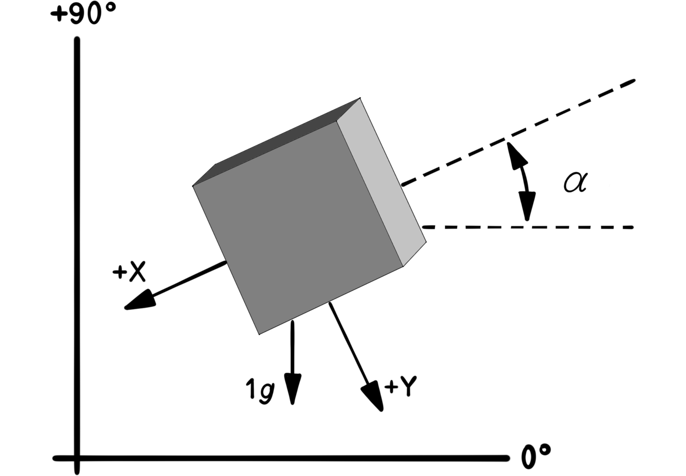
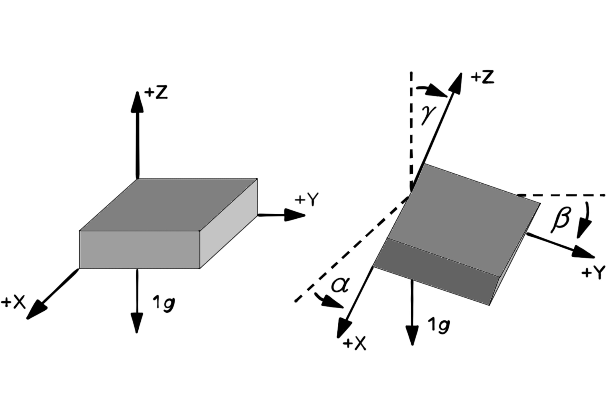
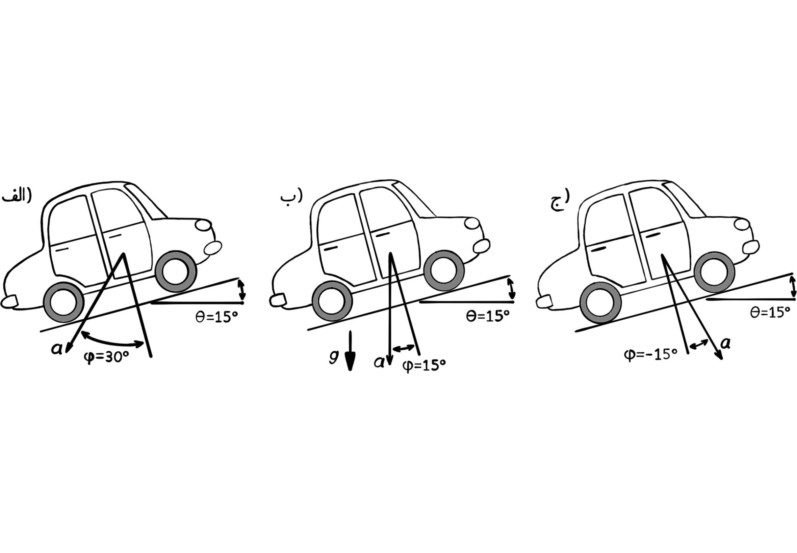
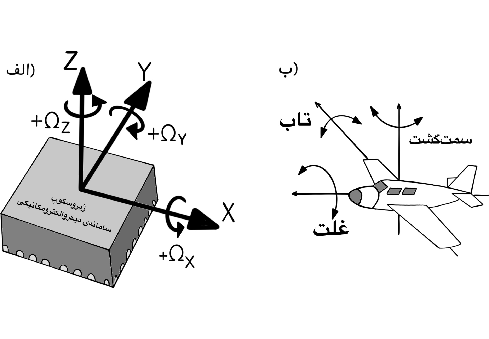
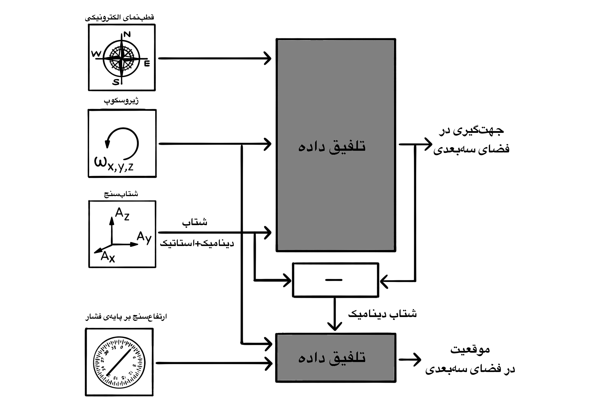

Ordinary Differential Equations
معادلهی دیفرانسیل معمولی
معادلاتی به شکل زیر:
$F(x, y, y^{\prime}, y^{\prime \prime}, ..., y^{(n)})$
یعنی معادلاتی که در آنها تابع مجهول وای:
$y = f(x)$
به همراه یک یا چند مشتق مراتب مختلف آن و همچنین به احتمال متغیر مستقل ایکس وجود دارد، معادلات دیفرانسیل معمولی گفته میشود.
چند مثال:
$y^{\prime \prime} - 3 y^{\prime} + x y = y^2$
$y^{\prime} + y = 0$
$4y^{(5)} - y + x = 0$
اما مثال زیر یک معادلهی دیفرانسیل نیست:
$2y - y^2 = 0$
حل کردن یک معادلهی دیفرانسیل یعنی پیدا کردن تابع مجهول وای.
مرتبهی معادلهی دیفرانسیل
بالاترین مرتبهی مشتق ظاهر شده در معادلهی دیفرانسیل را مرتبهی معادلهی دیفرانسیل میگویند.
حل چند مثال ساده
- $y^{\prime} = 3$,
$y = 3x + c$.
- $y^{\prime} - y = 0$,
$y^{\prime} = y$,
$y = ce^x$.
- $y^{\prime} = e^x$,
$y = e^x + c$.
- $y^{\prime} = 4e^x$,
$y = 4e^x$.
یادآوری ریاضی عمومی:
$(e^u)^{\prime} = u^{\prime} e^u$.
$(e^x)^{\prime} = 1 e^x = e^x$,
$(kf)^{\prime} = kf^{\prime}$.
چون تنوع معادلات دیفرانسیل زیاد است، آنها را در چند نوع طبقهبندی میکنند و برای هر کدام روش حل ارایه میشود. انواع معادلات دیفرانسیل معمولی مرتبهی اول: جداشدنی، کامل، همگن، خطی با ضرایب ثابت، برنولی و ریکاتی. مجهول ما در معادله، وای برابر با تابعی از ایکس میباشد.
معادلهی دیفرانسیل جداشدنی (تفکیک پذیر)
اگر معادلهی دیفرانسیل را بتوان به شکل زیر نوشت:
$f(y) \ dy = f(x) \ dx$
اف ایکس تابعی به طور تمام بر حسب ایکس است و اف وای تابعی به طور تمام بر حسب وای است. میگوییم این معادله جدا شده است و برای حل کردن آن از دو طرف انتگرال میگیریم.
مثال
$y^{\prime} = \frac{2x}{3y^2} \longrightarrow \frac{dy}{dx} = \frac{2x}{3y^2} \longrightarrow 3y^2 \ dy = 2x \ dx$,
$\int 3y^2 \ dy = \int 2x \ dx \longrightarrow y^3 = x^2 + c \longrightarrow y = \sqrt[3]{x^2 + c}$.
مثال
$y^{\prime} = e^{x + y} \longrightarrow \frac{dy}{dx} = e^x \ e^y \longrightarrow \frac{dy}{e^y} = e^x \ dx$,
$e^{-y} \ dy = e^x \ dx \longrightarrow \int e^{-y} \ dy = \int e^x \ dx \longrightarrow -e^{-y} = e^x + c$,
$e^{-y} = c - e^x \longrightarrow ln(e^{-y}) = ln(c - e^x) \longrightarrow -y = ln(c - e^x)$,
$y = -ln(c - e^x)$.
یادآوری دربارهی لگاریتم طبیعی
$ln(x) = log_e^x$,
$ln(7) = log_e^7 = 1.94591014906 \longrightarrow e^{1.94591014906} = 7$,
$log_a^b = log_a^b$,
$a^{log_a^b} = b$,
$ln(e^{-y}) = log_e^{e^{-y}}$.
خاصیت لگاریتم طبیعی
$log_a^{b^n} = n \ log_a^b$,
$log_e^{e^{-y}} = -y \ log_e^e = -y$.
روش تغییر متغیر برای حل کردن انتگرال تابع نمایی
$\int e^{-y}$
$u = -y \longrightarrow du = -dy \longrightarrow -\int e^u \ du = -e^u = -e^{-y}$.
مثال
معادلهی دیفرانسیل جداشدنی زیر را حل کنید.
$sec^2(x) \ tan(y) \ dx + sec^2(y) \ tan(x) \ dy = 0$
$sec(x) = \frac{1}{cos(x)}$
$sec^2(x) \ tan(y) \ dx = -sec^2(y) \ tan(x) \ dy$
$\frac{sec^2(x) dx}{tan(x)} = \frac{-sec^2(y) dy}{tan(y)}$
$\int \frac{sec^2(x)}{tan(x)} dx = -\int \frac{sec^2(y)}{tan(y)} dy \longrightarrow ln|tan(x)| = -ln|tan(y)| + c$
$\int \frac{u^{\prime}}{u} du = ln|u| + c$
$(tan(x))^{\prime} = sec^2(x)$
$(tan(u))^{\prime} = u^{\prime} (1 + tan^2(u)) \longrightarrow (tan(x))^{\prime} = 1 + tan^2(x)$
$1 + tan^2(x) = 1 + \frac{sin^2(x)}{cos^2(x)} = \frac{cos^2(x) + sin^2(x)}{cos^2(x)} = \frac{1}{cos^2(x)} = sec^2(x)$
$ln|tan(x)| + ln|tan(y)| = c \longrightarrow ln|tan(y)| = c - ln|tan(x)|$
$ln|tan(x) \ tan(y)| = c \longrightarrow e^{ln|tan(x) \ tan(y)|} = e^c$
$tan(x) \ tan(y) = e^c \longrightarrow tan(y) = \frac{e^c}{tan(x)} \longrightarrow y = tan^{-1} (\frac{e^c}{tan(x)})$.
معادلات دیفرانسیل کامل
معادلاتی هستند به شکل کلی زیر:
$M(x, y) \ dx + N(x, y) \ dy = 0$
به شرطی که:
$\frac{\partial M}{\partial y} = \frac{\partial N}{\partial x}$.
برای حل کردن این دسته از معادلات فرض میکنیم که اف ایکس و وای جواب معادله باشد و قرار میدهیم:
$f(x, y) = \int M(x, y) \ dx + h(y)$
که در اینجا ایچ وای تابعی به طور تمام بر حسب وای است. در ادامه، مقدار مشتق جزیی تابع اف نسبت به متغیر وای را به دست میآوریم و قرار میدهیم:
$N(x, y) = \frac{\partial f(x, y)}{\partial y}$
از این راه، تابع ایچ وای را به دست میآوریم و در آخر تابع اف ایکس و وای را به طور تمام به دست میآوریم.
مثال
معادلهی دیفرانسیل کامل زیر را حل کنید.
$(x + y + 1) dx + (x - y^2 + 3) dy = 0$
$\left\{ \begin{array}{l} M(x, y) = x + y + 1 &\\ N(x, y) = x - y^2 + 3 \end{array} \right.$
$\left\{ \begin{array}{l} \frac{\partial M(x, y)}{\partial y} = 1 &\\ \frac{\partial N(x, y)}{\partial x} = 1 \end{array} \right.$
$f(x, y) = \int (x + y + 1) dx + h(y) = \frac{x^2}{2} + y x + x + c + h(y)$
$\frac{\partial f(x, y)}{\partial y} = x + h^{\prime}(y)$
$x + h^{\prime}(y) = x - y^2 + 3 \longrightarrow h^{\prime}(y) = x - y^2 + 3 - x$
$h(y) = \int (-y^2 + 3) dy = \frac{-y^3}{3} + 3y$
$f(x, y) = \frac{x^2}{2} + yx + x - \frac{y^3}{3} + 3y + c$.
مثال
معادلهی دیفرانسیل کامل زیر را حل کنید.
$(2x^2 + 2xy^2 + 4y) dx + (2x^2y + 4x + 5y^4) dy = 0$
$\left\{ \begin{array}{l} M(x, y) = 2x^2 + 2xy^2 + 4y &\\ N(x, y) = 2x^2y + 4x + 5y^4 \end{array} \right.$
$\left\{ \begin{array}{l} \frac{\partial M(x, y)}{\partial y} = 4xy + 4 &\\ \frac{\partial N(x, y)}{\partial x} = 4xy + 4 \end{array} \right.$
$f(x, y) = \int (2x^2 + 2xy^2 + 4y) dx + h(y)$
$f(x, y) = \frac{2}{3} x^3 + x^2y^2 + 4yx + c + h(y)$
$N(x, y) = \frac{\partial f}{\partial y} = \frac{\partial}{\partial y} (\frac{2}{3} x^3 + x^2y^2 + 4yx + c + h(y))$
$N(x, y) = 2x^2y + 4x + h^{\prime}(y) = 2x^2 y + 4x + 5y^4$
$h^{\prime}(y) = 2x^2 y + 4x + 5y^4 - 4x - 2x^2y = 5y^4$
$h(y) = \int h^{\prime}(y) dy = \int 5y^4 dy = y^5 + c$
$f(x, y) = \frac{2}{3} x^3 + x^2y^2 + 4yx + y^5 + c$.
تعریف تابع همگن
تابع اف ایکس و وای را همگن از درجهی ان (ان عضوی از اعداد صحیح) میگویند، هرگاه عدد غیر صفری مانند تی وجود داشته باشد، به طوری که:
$f(tx, ty) = t^n f(x, y)$,
$n \in \mathbb{Z}$,
$t \neq 0$.
مثال
تابع اف ایکس و وای که با ضابطهی زیر تعریف شده است یک تابع همگن از درجهی چند است؟
$f(x, y) = x^4 - x^3 y$
$f(tx, ty) = (tx)^4 - (tx)^3 (ty) = t^4 x^4 - t^3 x^3 t y = t^4 x^4 - t^4 x^3 y = t^4 (x^4 - x^3 y) = t^4 f(x, y)$
$n = 4$
پس تابع اف ایکس و وای یک تابع همگن از درجهی چهار است.
معادلات دیفرانسیل مرتبهی اول همگن
معادلاتی به فرم زیر هستند:
$M(x, y) dx + N(x, y) dy = 0$
به طوری که تابعهای ام و ان همگن هستند.
روش حل: با تغییر متغیر زیر، معادله را به یک معادلهی جداشدنی تبدیل میکنیم و سپس آن را حل میکنیم.
$u = \frac{y}{x}$
مثال
معادلهی دیفرانسیل همگن زیر را حل کنید.
$y^{\prime} = 1 + \frac{y}{x}$
$y^{\prime} = \frac{x + y}{x}$
واضح است که ام و ان تابعهایی همگن از درجهی یک هستند. پس از روش تغییر متغیر استفاده میکنیم.
$M(tx, ty) = tx + ty = t(x + y) = t^1 M(x, y)$
$\left\{ \begin{array}{l} M(x, y) dx = N(x, y) dy &\\ (x + y) dx = (x) dy \end{array} \right.$
$y = ux \longrightarrow dy = x \ du + u \ dx$
$(x + ux) dx - x(x \ du + u \ dx) = 0$
$x \ dx + u x \ dx - x^2 \ du - x u \ dx = 0$
$x \ dx = x^2 \ du \longrightarrow \frac{1}{x} dx = du$
معادله بر حسب متغیرهای ایکس و وای تفکیک شد. حالا از دو طرف معادله انتگرال میگیریم تا به تابع مجهول وای بر حسب متغیر ایکس برسیم.
$\int \frac{1}{x} dx = \int du$,
$ln(x) = u + c \longrightarrow ln(x) = \frac{y}{x} + c \longrightarrow ln(x) = \frac{y + cx}{x}$,
$y = x \ ln(x) - cx$.
مثال
معادلهی دیفرانسیل همگن زیر را حل کنید.
$(x e^{\frac{y}{x}} + y) dx - x \ dy = 0$.
$y = ux \longrightarrow dy = x \ du + u \ dx \longrightarrow (x e^u + ux) dx - x (x \ du + u \ dx) = 0$
$x e^u \ dx + ux \ dx - x^2 \ du - xu \ dx = 0$
$x e^u \ dx = x^2 \ du \longrightarrow \frac{1}{x} dx = e^{-u} du$
$\int \frac{1}{x} dx = \int e^{-u} du \longrightarrow ln(x) = -e^{-u} + c$
$ln(x) = -e^{-\frac{y}{x}} + c$
$ln(c - ln(x)) = ln(e^{-\frac{y}{x}}) \longrightarrow ln(c - ln(x)) = -ln(e^{\frac{y}{x}}) \longrightarrow -ln(c - ln(x)) = \frac{y}{x}$
$y = -x \ ln(c - ln(x))$.
یادآوری
$log_b^a = log_b^a$,
$b^{log_b^a} = a$,
$log_e^{e^y} = y \ log_e^e = y$.
معادلهی دیفرانسیل خطی مرتبهی اول
حل کردن معادلهی دیفرانسیل خطی مرتبهی اول به فرم زیر
$y^{\prime} + p(x) y = q(x)$
که تابع پی و تابع کیو، تابعهایی پیوسته و بر حسب ایکس هستند. جواب این معادله به صورت زیر است:
$y = \frac{1}{e^{\int p(x)dx}}(\int e^{\int p(x)dx} q(x)dx + c)$
مثال
معادلهی خطی مرتبهی اول زیر را حل کنید.
$y^{\prime} + y = e^x$
$\left\{ \begin{array}{l} p(x) = 1 &\\ q(x) = e^x \end{array} \right.$
$\int p(x) dx = \int dx = x + c$
$y = \frac{1}{e^{x + c}} (\int e^{x + c} e^x dx + c)$
$y = \frac{1}{e^{x + c}} (\int e^{2x + c} dx + c) = \frac{1}{e^{x + c}} (\frac{e^{2x + c}}{2} + c)$
$y = \frac{e^x}{2} + ce^{-x - c}$
$y = \frac{1}{e^x} (\frac{1}{2} e^{2x} + c)$.
مثال
$y^{\prime} + \frac{2x}{1 + x^2} y = \frac{cot(x)}{1 + x^2}$
$\left\{ \begin{array}{l} p(x) = \frac{2x}{1 + x^2} &\\ q(x) = \frac{cot(x)}{1 + x^2} \end{array} \right.$
فرم کلی معادلات خطی:
$y^{\prime} + p(x) y = q(x)$
$e^{\int p(x) dx} = e^{\int \frac{2x}{1 + x^2} dx} = e^{\int \frac{du}{u}} = e^{ln|u|} = u$.
$e^{\int p(x) dx} = u = 1 + x^2$
$y = \frac{1}{1 + x^2} (\int q(x) e^{\int p(x) dx} dx + c)$
$y = \frac{1}{1 + x^2} (\int \frac{cot(x)}{1 + x^2} (1 + x^2) dx + c)$
$y = \frac{1}{1 + x^2} (\int cot(x) dx + c) = \frac{1}{1 + x^2} (ln(|sin(x)|) + c)$
یادآوری
$\int cot(x) dx = \int \frac{cos(x)}{sin(x)} dx = ln|sin(x)| + c$.
معادلات برنولی
معادلاتی هستند به فرم
$y^{\prime} + p(x) y = q(x) y^n$.
در حالتی که ان برابر با صفر باشد و در حالتی که ان برابر با یک باشد، معادلات برنولی همان معادلات خطی مرتبهی اول هستند.
$n = 0, n = 1$
بنابراین، این معادلات را در حالتی که ان نابرابر با صفر ونابرابر با یک است، حل میکنیم.
$n \neq 0, n \neq 1$
روش حل: برای حل معادلات برنولی، ابتدا طرفین معادله را بر وای به توان ان تقسیم میکنیم.
$/ y^n$
و سپس با تغییر متغیر زیر، معادله را به یک معادلهی خطی مرتبهی اول بر حسب ایکس و یو تبدیل میکنیم و بعد آن راحل میکنیم.
$u = \frac{1}{y^{n - 1}}$
مثال
معادلهی برنولی زیر را حل کنید.
$y^{\prime} + \frac{1}{x} y = y^2$
حل: تقسیم دو طرف معادله بر وای به توان ان:
$n = 2 \longrightarrow y^n = y^2$
$\frac{y^{\prime}}{y^2} + \frac{1}{xy} = 1$
تغییر متغیر
$\left\{ \begin{array}{l} u = \frac{1}{y} = y^{-1} &\\ du = d(y^{-1}) = -y^{-2} dy \end{array} \right.$
معادله را بر حسب متغیر یو بازنویسی میکنیم.
$\frac{y^{\prime}}{y^2} + \frac{1}{x} \frac{1}{y} = 1$
$y^{\prime} u^2 + \frac{u}{x} = 1$
$\left\{ \begin{array}{l} -du = dy \ y^{-2} &\\ u^{\prime} = - y^{\prime} y^{-2} \end{array} \right.$
$-u^{\prime} + \frac{u}{x} = 1$
$u^{\prime} - \frac{u}{x} = -1 \longrightarrow u^{\prime} - \frac{u}{x} + 1 = 0$
معادله خطی مرتبهی اول بر حسب متغیرهای یو و ایکس است.
$\left\{ \begin{array}{l} p(x) = \frac{-1}{x} &\\ q(x) = -1 \end{array} \right.$
$e^{\int p(x) dx} = e^{\int -\frac{1}{x} dx} = e^{-ln|x|} = \frac{1}{x}$
$u = \frac{1}{e^{\int p(x) dx}} (\int q(x) e^{\int p(x) dx} dx + c)$
$u = x (\int (-1) \frac{1}{x} dx + c) = x(\int -\frac{1}{x} dx + c)$
$u = x (-ln|x| + c)$
$u = \frac{1}{y}$
$y^{-1} = u = x(-ln|x| + c) \longrightarrow y = \frac{1}{x(-ln|x| + c)}$.
یادآوری
به طور کلی متغیر وای عبارتیست بر حسب متغیر ایکس.
$(y^n)^{\prime} = n y^{\prime} y^{n - 1}$
در حالت خاص
$y = x \longrightarrow (x^n)^{\prime} = n x^{\prime} x^{n - 1}$.
تمرینهای دورهای
تمرین معادلهی جداشدنی
- $y^\prime = \frac{5x}{2y^2}$
$\frac{dy}{dx} = \frac{5x}{2y^2} \longrightarrow 5x \ dx = 2y^2 \ dy$
$\int 5x \ dx = \int 2y^2 \ dy \longrightarrow \frac{5x^2}{2} = \frac{2y^3}{3} + c$
$\frac{2y^3}{3} = \frac{5x^2}{2} + c \longrightarrow y^3 = \frac{3}{2} (\frac{5x^2}{2} - c)$
$y = \sqrt[3]{\frac{3}{2} (\frac{5x^2}{2} - c)}$.
- $xy^\prime + y = y^2$
$x \frac{dy}{dx} + y = y^2 \longrightarrow \frac{x}{dx} + \frac{y}{dy} = \frac{y^2}{dy}$
$\frac{x}{dx} = \frac{y^2}{dy} - \frac{y}{dy} \longrightarrow \frac{x}{dx} = \frac{y^2 - y}{dy}$
$\frac{dx}{x} = \frac{dy}{y^2 - y} \longrightarrow \frac{dx}{x} = \frac{dy}{y (y - 1)}$
$\frac{dx}{x} = dy (\frac{A}{y} + \frac{B}{y - 1}) \longrightarrow \frac{dx}{x} = \frac{-dy}{y} + \frac{dy}{y - 1}$
$\frac{A (y - 1) + B y}{y (y - 1)} = \frac{1}{y (y - 1)}$
$Ay - A + By = 1$
$\left\{ \begin{array}{l} A + B = 0 &\\ -A = 1 \end{array} \right.$
$\left\{ \begin{array}{l} A = -1 &\\ B = 1 \end{array} \right.$
$\int \frac{dx}{x} = - \int \frac{dy}{y} + \int \frac{dy}{y - 1} \longrightarrow ln|x| = -ln|y| + ln|y - 1| + c$
$ln|x| = ln|\frac{y - 1}{y}| + c \longrightarrow e^{ln|x|} = e^{ln|\frac{y - 1}{y}| + c} \longrightarrow x = \frac{y - 1}{y} + c_1$
$x = 1 - \frac{1}{y} + c_1 \longrightarrow \frac{1}{y} = 1 - x + c_1$
$y = \frac{1}{1 - x + c_1}$.
تمرین معادلهی همگن
- $(x^2 + y^2) dx + 2xy \ dy = 0$
$u = \frac{y}{x} \longrightarrow y = ux \longrightarrow dy = u \ dx + x \ du$
$(x^2 + u^2 x^2) dx + 2x ux \ dy = 0$
$x^2 (u^2 + 1) dx + 2x^2 u \ dy = 0 \longrightarrow x^2 (u^2 + 1) dx + 2x^2 u (u \ dx + x \ du) = 0$
$(u^2 + 1) dx + 2u^2 \ dx + 2ux \ du = 0$
$dx(u^2 + 1 + 2u^2) + 2ux \ du = 0 \longrightarrow (3u^2 + 1) dx + 2ux \ du = 0$
$\frac{3u^2 + 1}{x} dx + 2u \ du = 0 \longrightarrow \frac{dx}{x} + \frac{2u}{3u^2 + 1} du = 0$
$\frac{dx}{x} = \frac{-2u}{3u^2 + 1} du \longrightarrow \int \frac{dx}{x} = \int \frac{-2u}{3u^2 + 1} du$
$ln|x| = \frac{-1}{3} \int \frac{2u}{u^2 + 1} du \longrightarrow ln|x| = \frac{-1}{3} ln|u^2 +1| + c$
$e^{ln|x|} = e^{\frac{-1}{3} ln|u^2 + 1| + c}$
$x = e^{ln|(u^2 + 1)^{\frac{-1}{3}}| + c} \longrightarrow x = \frac{1}{\sqrt[3]{u^2 + 1}} + c_1$
$\frac{1}{x} = \sqrt[3]{u^2 + 1} + c_1 \longrightarrow \frac{1}{x^3} = u^2 + 1 + c_1$
$u^2 = \frac{1}{x^3} - 1 - c_1 \longrightarrow u = \sqrt{\frac{1}{x^3} - 1 - c_1}$
$\frac{y}{x} = \sqrt{\frac{1}{x^3} - 1 - c_1}$
$y = x \sqrt{\frac{1}{x^3} - 1 - c_1}$.
- $y^\prime = 2 + \frac{y}{x}$
$u = \frac{y}{x} \longrightarrow y = ux \longrightarrow dy = u \ dx + x \ du$
$\frac{dy}{dx} = u + x \frac{du}{dx} \longrightarrow y^\prime = u + x u^\prime$
$u + xu^\prime = 2 + u \longrightarrow x u^\prime = 2 \longrightarrow u^\prime = \frac{2}{x}$
$\frac{du}{dx} = \frac{2}{x} \longrightarrow du = \frac{2 dx}{x}$
$\int du = \int 2 \frac{dx}{x} \longrightarrow u = 2 ln|x| + c$
$\frac{y}{x} = ln(x^2) + c \longrightarrow y = x \ ln(x^2) + cx$.
تمرین معادلهی کامل
- $(x + y + 2) dx + (x - y^2 + 1) dy = 0$
$f(x, y) = \int (x + y + 2) dx + h(y) = \frac{x^2}{2} + xy + 2x + c + h(y)$
$\frac{\partial f}{\partial y} = N(x, y)$
$x + h^\prime (y) = x - y^2 + 1 \longrightarrow h^\prime (y) = \int h(y) dy = \int (1 - y^2) dy = y - \frac{y^3}{3} + c_1$
$f(x, y) = \frac{x^2}{2} + xy + 2x + y - \frac{y^3}{3} + c_2$.
- $(2x^2 + 4y) dx + (4x - 3y^2) dy = 0$
$f(x, y) = \int M(x, y) dx + h(y) \longrightarrow f(x, y) = \int (2x^2 + 4y) dx + h(y) = \frac{2x^3}{3} + 4xy + h(y)$
$\frac{\partial f(x, y)}{\partial y} = N(x, y) \longrightarrow 4x + h^\prime (y) = 4x - 3y^2 \longrightarrow h^\prime (y) = -3y^2$
$h(y) = \int h^\prime (y) dy \longrightarrow h(y) = \int -3y^2 \ dy \longrightarrow h(y) = -3 \frac{y^3}{3} + c \longrightarrow h(y) = -y^3 + c$
$f(x, y) = \frac{2}{3} x^3 + 4xy - y^3 + c$.
- $(2xe^y + e^x) dx + (x^2 + 1) e^y dy = 0$
$f(x, y) = \int M(x, y) dx + h(y) = \int (2xe^y + e^x) dx + h(y) = \frac{2x^2}{2} e^y + e^x + c + h(y)$
$\frac{\partial f(x, y)}{\partial y} = N(x, y) \longrightarrow x^2 e^y + h^\prime (y) = e^y (x^2 + 1)$
$h^\prime (y) = e^y (x^2 + 1) - x^2 e^y = e^y x^2 + e^y - e^y x^2 = e^y$
$h(y) = \int h^\prime (y) dy = \int e^y dy = e^y + c_1$
$f(x, y) = x^2 e^y + e^x + e^y + c_2$
تمرین معادلهی خطی مرتبه اول
- $\frac{dy}{dx} + y = e^x$
$\left\{ \begin{array}{l} p(x) = 1 &\\ q(x) = e^x \end{array} \right.$
$\int p(x) dx = \int dx = x$
$y = \frac{1}{e^{\int p(x) dx}} (\int e^{\int p(x) dx} q(x) dx + c)$
$y = \frac{1}{e^x} (\int e^x e^x dx + c) \longrightarrow y = e^{-x} (\int e^{2x} dx + c)$
$y = e^{-x} (\frac{e^{2x}}{2} + c) \longrightarrow y = \frac{e^x}{2} + c e^{-x}$.
- $\frac{dy}{dx} = \frac{e^{2y}}{xe^{2y} - y}$
$\frac{dx}{dy} = \frac{x e^{2y} - y}{e^{2y}} = \frac{x e^{2y}}{e^{2y}} - \frac{y}{e^{2y}}$
$\frac{dx}{dy} = x - \frac{y}{e^{2y}} \longrightarrow x^\prime - x = -\frac{y}{e^{2y}}$
$\left\{ \begin{array}{l} p(y) = -1 &\\ q(y) = \frac{-y}{e^{2y}} \end{array} \right.$
$\int p(y) dy = \int -dy = -y$
$x = \frac{1}{e^{\int p(y) dy}} (\int e^{\int p(y) dy} q(y) dy + c)$
$x = \frac{1}{e^{-y}} (\int e^{-y} \frac{-y}{e^{2y}} dy + c) \longrightarrow x = e^y (\int -e^{-3y} y \ dy + c)$
$\left\{ \begin{array}{l} u = y \longrightarrow du = dy &\\ dv = -e^{-3y} dy \longrightarrow v = \frac{e^{-3y}}{3} \end{array} \right.$
$\int -e^{-3y} y \ dy = \int u \ dv = uv - \int v \ du = y \frac{e^{-3y}}{3} - \int \frac{e^{-3y}}{3} dy$
$\int -e^{-3y} y \ dy = \frac{y}{3e^{3y}} - (\frac{-1}{3})) \frac{e^{-3y}}{3} = \frac{y}{3e^{3y}} + \frac{1}{9} e^{-3y}$
$x = e^y (\frac{y}{3} e^{-3y} + \frac{1}{9} e^{-3y} + c) \longrightarrow x = e^{-2y} (\frac{y}{3} + \frac{1}{9}) + c e^y$.
تمرین معادلهی برنولی
- $y^\prime - \frac{y}{x} = y^2$
$n = 2$
$y^\prime y^{-2} - \frac{1}{xy} = 1$
$u = \frac{1}{y^{2 - 1}} = \frac{1}{y} \longrightarrow y = \frac{1}{u} \longrightarrow y^\prime = (u^{-1})^\prime = -u^{-2} u^\prime$
$u^\prime (-u^{-2}) (u^2) - \frac{u}{x} = 1$
$-u^\prime - \frac{u}{x} = 1 \longrightarrow u^\prime + \frac{u}{x} = -1$
$\left\{ \begin{array}{l} p(x) = \frac{1}{x} &\\ q(x) = -1 \end{array} \right.$
$\int p(x) dx = \int \frac{dx}{x} = ln|x|$
$u = \frac{1}{e^{\int p(x) dx}} (\int e^{\int p(x) dx} q(x) dx + c)$
$u = \frac{1}{e^{ln|x|}} (\int e^{ln|x|} (-1) dx + c)$
$u = \frac{1}{x} (\int -\frac{dx}{x} + c) = \frac{1}{x} (-ln|x| + c)$
$\frac{1}{y} = \frac{-ln|x| + c}{x}$
$y = \frac{x}{-ln|x| + c}$.
- $y^\prime + xy = \frac{x}{y^3}$
$n = 3$
$u = \frac{1}{y^{3 - 1}} = \frac{1}{y^2} \longrightarrow y^{-2} = u \longrightarrow -2y^{-3}dy = du \longrightarrow dy = \frac{du}{-2}y^3$
$y^\prime y^{-3} + xy^{-2} = x$
$\frac{-u^\prime}{2} + xu = x \longrightarrow u^\prime - 2xu = -2x$
$\left\{ \begin{array}{l} p(x) = -2x &\\ q(x) = -2x \end{array} \right.$
$\int p(x) dx = \int -2x \ dx = -x^2$
$u = \frac{1}{e^{\int p(x) dx}} (\int e^{\int p(x) dx} q(x) dx + c)$
$u = \frac{1}{e^{-x^2}} (\int e^{-x^2} (-2x) dx + c)$
$\left\{ \begin{array}{l} v = -x^2 &\\ dv = -2x \ dx \end{array} \right.$
$\int -e^{-x^2} 2x \ dx = \int e^v dv = e^v = e^{-x^2}$
$u = \frac{1}{e^{-x^2}} (e^{-x^2} + c) = 1 + c e^{x^2}$
$\frac{1}{y^2} = 1 + c e^{x^2} \longrightarrow y^2 = \frac{1}{1 + c e^{x^2}}$
$y = \sqrt{\frac{1}{1 + c e^{x^2}}}$.
معادلات خطی مرتبهی دوم همگن (با ضرایب ثابت)
معادلاتی هستند به فرم زیر
$y^{\prime \prime} + a y^{\prime} + by = 0$
که در اینجا آ و ب عددهای ثابتی هستند. به این دسته از معادلات همگن نیز گفته میشود زیرا در سمت راست معادله صفر وجود دارد. برای حل کردن این نوع معادلات، ابتدا باید معادلهی مفسر (مشخصه) را به دست آوریم و حل کنیم. معادلهی مفسر، معادلهای درجه دوم است که به صورت زیر به دست میآید:
$r^2 + ar + b = 0$
این معادله را با روش دلتا حل میکنیم.
حالت اول
اگر دلتا بزرگتر از صفر باشد، معادلهی مفسر دو ریشهی مجزا آر پاییننویس ۱ و آر پاییننویس ۲ خواهد داشت. در این صورت جواب معادلهی دیفرانسیل به شکل زیر است:
$\Delta > 0 \longrightarrow y = c_1 e^{r_1 x} + c_2 e^{r_2 x}$.
مثال
معادلهی دیفرانسیل زیر را حل کنید.
$y^{\prime \prime} + y^{\prime} - 2y = 0$
$\left\{ \begin{array}{l} a = 1 &\\ b = -2 \end{array} \right.$
معادلهی مفسر را تشکیل میدهیم.
$r^2 + r - 2 = 0$,
$\Delta = 1^2 - 4 (1) (-2) = 9 > 0$,
$r_1 = \frac{-1 + \sqrt{9}}{2 (1)} = 2$,
$r_2 = \frac{-1 - \sqrt{9}}{2 (1)} = -2$,
$y = c_1 e^{2x} + c_2 e^{-2x}$.
حالت دوم
اگر دلتا برابر با صفر باشد، در این حالت معادلهی مفسر یک ریشهی مضاعف دارد. فرض کنید که آر ریشهی آن باشد. جواب معادلهی دیفرانسیل به صورت زیر است:
$\Delta = 0 \longrightarrow y = (c_1 + c_2 x) e^{r x}$.
مثال
معادلهی دیفرانسیل زیر را حل کنید.
$y^{\prime \prime} + 4 y^{\prime} + 4y = 0$.
معادلهی مفسر را تشکیل میدهیم:
$r^2 + 4r + 4 = 0$
$\Delta = 4^2 - 4 (1) (4) = 0 \longrightarrow r = \frac{-4}{2 (1)} = -2$
$y = (c_1 + c_2 x) e^{-2x}$.
حالت سوم
$\Delta < 0$
اگر دلتا کوچکتر از صفر باشد، معادلهی مفسر ریشهی حقیقی ندارد. عدد آی عددی موهومی است.
$i^2 = -1 \longrightarrow i = \sqrt{-1}$
$z^2 = -1 \longrightarrow z^2 + 1 = 0$
$i \in \mathbb{C}$

در این حالت، معادلهی مفسر دو ریشهی مختلط به شکل زیر دارد.
$\left\{ \begin{array}{l} r_1 = \alpha + \beta i &\\ r_2 = \alpha - \beta i \end{array} \right.$
$r_1, r_2 \in \mathbb{C} = \{ x + y i | x \in \mathbb{R}, y \in \mathbb{R} \}$
در این صورت، جواب معادلهی دیفرانسیل به شکل زیر خواهد بود:
$y = e^{\alpha x} (c_1 cos(\beta x) + c_2 sin(\beta x))$
مثال
معادلهی مرتبه دوم با ضرایب ثابت (همگن) را حل کنید.
$y^{\prime \prime} + 4 y^{\prime} + 5y = 0$
معادلهی مشخصه را تشکیل میدهیم.
$r^2 + 4r + 5 = 0$,
$\Delta = 16 - 20 = -4$,
$r_1 = \frac{-4 + \sqrt{-4}}{2} = -2 + i$,
$r_2 = \frac{-4 - \sqrt{-4}}{2} = -2 - i$,
$\left\{ \begin{array}{l} \alpha = -2 &\\ \beta = 1 \end{array} \right.$,
$y = e^{-2x} (c_1 cos(x) + c_2 sin(x))$.
معادلات غیرکامل
پیشتر گفتیم که معادلاتی به شکل زیر به شرطی که مشتق جزیی تابع ام نسبت به متغیر وای برابر با مشتق جزیی تابع ان نسبت به متغیر ایکس باشد کامل هستند.
$\left\{ \begin{array}{l} M(x, y) dx + N(x, y) dy = 0 &\\ \frac{\partial M}{\partial y} = \frac{\partial N}{\partial x} \end{array} \right.$
اگر شرط بالا برقرار نباشد، معادله غیر کامل است.
$\frac{\partial M}{\partial y} \neq \frac{\partial N}{\partial x}$
برای حل کردن معادلات غیر کامل، باید عبارتی مانند تابع ایچ بر حسب متغیرهای ایکس و وای را پیدا کنیم، به طوری که با ضرب کردن دو طرف معادله در تابع ایچ معادله کامل شود.
$h(x, y)$
یعنی معادلهی زیر کامل باشد.
$h(x, y) M(x, y) dx + h(x, y) N(x, y) dy = 0$
به تابع ایچ که بر حسب متغیرهای ایکس و وای است عامل انتگرالساز گفته میشود. عامل انتگرالساز منحصر به فرد نمیباشد. و در حالت کلی پیدا کردن عامل انتگرالساز کار بسیار سختی است. اما در اینجا در دو حالت خیلی خاص عامل انتگرالساز را معرفی میکنیم.
حالت اول
اگر معادلهی زیر غیر کامل باشد، یعنی مشتق جزیی تابع ام نسبت به متغیر وای نابرابر با مشتق جزیی تابع ان نسبت به متغیر ایکس باشد،
$\left\{ \begin{array}{l} M(x, y) dx + N(x, y) dy = 0 &\\ \frac{\partial M}{\partial y} \neq \frac{\partial N}{\partial x} \end{array} \right.$
و همچنین عبارت پی عبارتی فقط بر حسب متغیر ایکس باشد،
$p(x) = \frac{1}{N} (\frac{\partial M}{\partial y} - \frac{\partial N}{\partial x})$
آنگاه عامل انتگرالساز برابر است با:
$e^{\int p(x) dx}$.
حالت دوم
اگر عبارت پی عبارتی فقط بر حسب متغیر وای باشد،
$p(y) = \frac{-1}{M} (\frac{\partial M}{\partial y} - \frac{\partial N}{\partial x})$
آنگاه عامل انتگرالساز برابر است با:
$e^{\int p(y) dy}$.
مثال
معادلهی غیرکامل زیر را حل کنید.
$dx + \frac{x - sin(y)}{y} dy = 0$.
$\left\{ \begin{array}{l} M(x, y) = 1 &\\ N(x, y) = \frac{x - sin(y)}{y} \end{array} \right.$
$\left\{ \begin{array}{l} \frac{\partial M}{\partial y} = 0 &\\ \frac{\partial N}{\partial x} = \frac{1}{y} \end{array} \right.$
$\left\{ \begin{array}{l} 0 \neq \frac{1}{y} &\\ \frac{\partial M}{\partial y} \neq \frac{\partial N}{\partial x} \end{array} \right.$
پس معادله غیرکامل است. حالا مقدار عبارت پی را محاسبه میکنیم تا عامل انتگرالساز را پیدا کنیم.
$p(y) = \frac{-1}{1} (0 - \frac{1}{y}) = \frac{1}{y}$
عبارت پی به طور تمام بر حسب متغیر وای به دست آمد. سپس عامل انتگرالساز را به شکل زیر به دست میآوریم:
$e^{\int p(y) dy} = e^{\int \frac{1}{y} dy} = e^{ln|y|} = y$
دو طرف معادله را در عامل انتگرالساز ضرب میکنیم تا معادله کامل شود.
$y \ dx + (x - sin(y)) dy = 0$
$\left\{ \begin{array}{l} M_1(x, y) = y &\\ N_1(x, y) = x - sin(y) \end{array} \right.$
دوباره شرط کامل بودن معادله را بررسی میکنیم.
$\left\{ \begin{array}{l} \frac{\partial M_1}{\partial y} = 1 &\\ \frac{\partial N_1}{\partial x} = 1 \end{array} \right.$
$\frac{\partial M_1}{\partial y} = \frac{\partial N_1}{\partial x}$
پس معادله کامل شد. در ادامه، معادلهی کامل را حل میکنیم تا به تابع مجهول اف برسیم.
$f(x, y) = \int M_1(x, y) dx + h(y) = \int y \ dx + h(y)$
$f(x, y) = xy + c + h(y)$
$\frac{\partial f(x, y)}{\partial y} = N_1(x, y) = \frac{\partial}{\partial y} (xy + c + h(y))$
مقدار مشتق جزیی تابع اف نسبت به متغیر ایگرگ را با مقدار عبارت تابع ان پاییننویس ۱ مقایسه میکنیم تا مقدار مشتق تابع ایچ بر حسب متغیر ایگرگ را بیابیم.
$N_1(x, y) = x + h^{\prime}(y)$,
$x + h^{\prime}(y) = x - sin(y) \longrightarrow h^{\prime}(y) = -sin(y)$,
$f(x, y) = xy + c + \int h^{\prime}(y) dy = xy + c + \int -sin(y) dy$,
$f(x, y) = xy + c + cos(y) + c_1$,
$f(x, y) = xy + cos(y) + c_2$.
تمرین
معادلهی غیرکامل را حل کنید.
$(x^2 + x - y^2) dx + x y \ dy = 0$.
$\left\{ \begin{array}{l} M(x, y) = x^2 + x - y^2 &\\ N(x, y) = xy \end{array} \right.$
$\left\{ \begin{array}{l} \frac{\partial M(x, y)}{\partial y} = -2y &\\ \frac{\partial N(x, y)}{\partial x} = y \end{array} \right.$
$\frac{\partial M}{\partial y} \neq \frac{\partial N}{\partial x}$
معادله غیرکامل است. برای پیدا کردن عامل انتگرالساز به شکل زیر عمل میکنیم.
$\frac{\partial M}{\partial y} - \frac{\partial N}{\partial x} = -2y - y = -3y$
$p(x) = \frac{1}{N} (\frac{\partial M}{\partial y} - \frac{\partial N}{\partial x}) = \frac{1}{xy} (-3y) = \frac{-3}{x}$
به دلیل اینکه پی عبارتی فقط بر حسب متغیر ایکس است، عامل انتگرالساز برابر است با:
$e^{\int p(x) dx} = e^{-3 \int \frac{dx}{x}} = e^{-3 ln|x|} = e^{ln|x^{-3}|} = x^{-3}$
با ضرب کردن عامل انتگرالساز در دو طرف معادله، آن را کامل میکنیم.
$x^{-3} (x^2 + x - y^2) dx + x^{-3} (xy) dy = 0$
$(x^{-1} + x^{-2} - y^2 x^{-3}) dx + (x^{-2} y) dy = 0$
$\left\{ \begin{array}{l} M_1(x, y) = x^{-1} + x^{-2} - y^2 x^{-3} &\\ N_1(x, y) = x^{-2} y \end{array} \right.$
$\frac{\partial M_1}{\partial y} = -2y x^{-3}$
$\frac{\partial N_1}{\partial x} = -2x^{-3} y$
معادلهی دیفرانسیل پس از ضرب کردن عامل انتگرالساز کامل شد.
$\frac{\partial M_1}{\partial y} = \frac{\partial N_1}{\partial x}$
$f(x, y) = \int M_1(x, y) dx + h(y) = \int x^{-1} + x^{-2} - y^2 x^{-3} \ dx + h(y)$
$f(x, y) = ln|x| - \frac{1}{x} + y^2 \frac{x^{-2}}{2} + c + h(y)$
$N_1(x, y) = \frac{\partial f(x, y)}{\partial y} = \frac{\partial}{\partial y} (ln|x| - \frac{1}{x} + y^2 \frac{x^{-2}}{2} + c + h(y))$
مشتق جزیی تابع اف نسبت به متغیر ایگرگ را با تابع ان پاییننویس ۱ مقایسه میکنیم تا مقدار مشتق تابع ایچ را پیدا کنیم.
$N_1(x, y) = yx^{-2} + h^{\prime}(y)$,
$h^{\prime}(y) = 0 \longrightarrow h(y) = \int h^{\prime}(y) dy = \int 0 dy = c_1$,
$f(x, y) = ln|x| - \frac{1}{x} + y^2 \frac{x^{-2}}{2} + c + c_1$,
$f(x, y) = ln|x| - \frac{1}{x} + y^2 \frac{x^{-2}}{2} + c_2$.
تبدیل لاپلاس
در ریاضیات تبدیلهایی داریم که یک تابع را به تابع دیگری تبدیل میکند. برای مثال، مشتقگیری یک تبدیل است که تابع اف بر حسب متغیر ایکس را به تابع اف پریم بر حسب متغیر ایکس تبدیل میکند.
$D: f(x) \to f^{\prime}(x)$,
$D f(x) = f^{\prime}(x)$.
تبدیل لاپلاس یک تبدیل انتگرالی است که تابع اف بر حسب متغیر تی (که به طور معمول زمان فرض میشود) را به تابع اف بر حسب متغیر اس (که به طور معمول فرکانس فرض میشود) تبدیل میکند. تبدیل لاپلاس کاربردهایی در فیزیک دارد، اما در اینجا (درس معادلات دیفرانسیل) ما فقط به این نکته توجه میکنیم که تبدیل لاپلاس میتواند ابزاری برای حل بعضی از معادلات دیفرانسیل باشد. تبدیل لاپلاس تابع اف بر حسب متغیر تی به صورت زیر تعریف میشود:
$L\{ f(t) \} = \int_0^\infty e^{-st} f(t) dt = F(s)$.
مثال
تبدیل لاپلاس تابع اف بر حسب متغیر تی با ضابطهی داده شده در زیر، را به دست آورید.
$f(t) = 1$
$L\{ f(t) \} = \int_0^{\infty} e^{-st} dt = -\frac{1}{s} e^{-st} |_0^\infty = 0 - (-\frac{1}{s}) = \frac{1}{s}$.
به شرطی که متغیر اس بزرگتر از صفر باشد.
$s > 0$
به دلیل اینکه علامت منفی متغیر اس انتگرال را بینهایت میکند. یعنی انتگرال واگرا میشود. divergent
مثال
تبدیل لاپلاس تابع اف بر حسب متغیر تی را به دست آورید.
$f(t) = e^{at}$
$L\{ e^{at} \} = \int_0^\infty e^{-st} e^{at} dt = \int_0^\infty e^{(a - s) t} dt$
$L\{ e^{at} \} = \frac{e^{(a - s) t}}{a - s} |_0^\infty = \frac{e^{(a - s) \infty}}{a - s} - \frac{e^0}{a - s}$
$\left\{ \begin{array}{l} a > s \longrightarrow \infty &\\ a < s \longrightarrow -\frac{1}{a - s} = \frac{1}{s - a} \end{array} \right.$
یادآوری ریاضی عمومی
روش تغییر متغیر:
$\int e^{at} dt$
$u = at \longrightarrow du = a \ dt$
$\frac{1}{a} \int e^u du = \int e^{at} dt = \frac{1}{a} e^u + c = \frac{1}{a} e^{at} + c$
جدول تبدیل لاپلاس
$f(t) \to L \{ f(t) \} = F(s)$:
$f(t) = 1 \to L\{ 1 \} = F(s) = \frac{1}{s}, \ D_F: s > 0$,
$f(t) = e^{at} \to L\{ e^{at} \} = F(s) = \frac{1}{s - a}, \ D_F: s > 0$,
$f(t) = t \to L\{ t \} = F(s) = \frac{1}{s^2}, \ D_F: s > 0$,
$f(t) = t^n \ (n \in \mathbb{N}) \to L\{ t^n \} = F(s) = \frac{n!}{s^{n + 1}}, \ D_F: s > 0$,
$f(t) = cos(at) \to L\{ cos(at) \} = F(s) = \frac{s}{s^2 + a^2}, \ D_F: s > 0$,
$f(t) = sin(at) \to L\{ sin(at) \} = F(s) = \frac{a}{s^2 + a^2}, \ D_F: s > 0$.
تبدیل معکوس لاپلاس
$F(s) \leftrightarrow f(t)$
فرض کنید تابع اف بزرگ بر حسب متغیر اس را داشته باشیم و بخواهیم تابع اف کوچک بر حسب متغیر تی را پیدا کنیم. به این کار، تبدیل معکوس لاپلاس گفته میشود. برای مثال، فرض کنیم داشته باشیم:
$F(s) = \frac{1}{s - 8}$
آنگاه داریم:
$L^{-1}\{ \frac{1}{s - 8} \} = e^{8t} = f(t)$
مثال
تبدیل معکوس لاپلاس تابع زیر را به دست آورید.
$F(s) = \frac{5s - 1}{s^2 - 1}$
$\frac{5s - 1}{s^2 - 1} = \frac{5s - 1}{(s + 1) (s - 1)} = \frac{A}{s - 1} + \frac{B}{s + 1} = \frac{A (s + 1) + B (s - 1)}{(s - 1) (s + 1)}$
$\frac{As + Bs + A - B}{(s - 1) (s + 1)} = \frac{(A + B) s + (A - B)}{(s - 1) (s + 1)}$
$\left\{ \begin{array}{l} A + B = 5 &\\ A - B = -1 \end{array} \right.$
$\left\{ \begin{array}{l} 2A = 4 \longrightarrow A = 2 &\\ B = 3 \end{array} \right.$
از خاصیت خطی تبدیل لاپلاس معکوس استفاده میکنیم.
$L^{-1} \{ \frac{5s - 1}{s^2 - 1} \} = L^{-1} \{ \frac{2}{s - 1} + \frac{3}{s + 1} \} = 2 e^t + 3 e^{-t}$.
تمرین
$L^{-1} \{ \frac{3s - 2}{s^3} \}$
$L^{-1} \{ \frac{3s - 2}{s^3} \} = L^{-1} \{ \frac{A}{s^3} + \frac{B}{s^2} + \frac{C}{s} \} = L^{-1} \{ \frac{A + Bs + Cs^2}{s^3} \}$
$3s - 2 = A + Bs + C s^2$
$\left\{ \begin{array}{l} A = -2 &\\ B = 3 &\\ C = 0 \end{array} \right.$
$L^{-1} \{ \frac{3s - 2}{s^3} \} = L^{-1} \{ \frac{-2}{s^3} + \frac{3}{s^2} + \frac{0}{s} \} = L^{-1} \{ \frac{-2}{s^3} \} + L^{-1} \{ \frac{3}{s^2} \} = -t^2 + 3t$
$t^n \leftrightarrow \frac{n!}{s^{n + 1}}$
تبدیل لاپلاس مشتق
اگر تبدیل لاپلاس تابع اف بر حسب متغیر تی و تبدیل لاپلاس تابع اف پریم بر حسب متغیر تی موجود باشد،
$L\{ f(t) \}, \ L\{ f^{\prime}(t) \}$
آن گاه:
$L \{ f^{\prime}(t) \} = s L \{ f(t) \} - f(0)$
$L \{ f^{\prime \prime}(t) \} = s L \{ f^\prime (t) \} - f^\prime (0)$
$L \{ f^{\prime \prime} (t) \} = s (s L \{ f(t) \} - f(0)) - f^\prime (0)$
$L \{ f^{\prime \prime} (t) \} = s^2 L \{ f(t) \} - s \ f(0) - f^\prime (0)$
مثال
به کمک تبدیل لاپلاس، معادلهی دیفرانسیل زیر را با شرایط اولیهی داده شده حل کنید.
$y^\prime + y = e^{2t}$,
$f(0) = y(0) = 0$.
برای حل کردن معادله از دو طرف معادله تبدیل لاپلاس میگیریم.
$L \{ y^\prime + y \} = L \{ e^{2t} \}$
$L \{ y^\prime \} + L \{ y \} = \frac{1}{s - 2}$
$s \ L \{ y \} - y(0) + L \{ y \} = \frac{1}{s - 2}$
$L \{ y \} (s + 1) = \frac{1}{s - 2}$
$L \{ y \} = \frac{1}{(s + 1) (s - 2)} \longrightarrow y = L^{-1} \{ \frac{1}{(s + 1) (s - 2)} \}$
$\frac{1}{(s + 1) (s - 2)} = \frac{A}{s + 1} + \frac{B}{s - 2} = \frac{A (s - 2) + B (s + 1)}{(s + 1) (s - 2)} = \frac{(A + B) s - 2A + B}{(s + 1) (s - 2)}$
$\left\{ \begin{array}{l} A + B = 0 &\\ -2A + B = 1 \end{array} \right.$
$3A = -1 \longrightarrow A = \frac{-1}{3} \longrightarrow B = \frac{1}{3}$
$y = L^{-1} \{ \frac{\frac{-1}{3}}{s + 1} + \frac{\frac{1}{3}}{s - 2} \} = \frac{-1}{3} L^{-1} \{ \frac{1}{s + 1} \} + \frac{1}{3} L^{-1} \{ \frac{1}{s - 2} \}$
$y = \frac{-1}{3} e^{-t} + \frac{1}{3} e^{2t}$.
یادآوری
$L \{ y^\prime \} = s L \{ y \} - y(0)$.
$L \{ y^{\prime \prime} \} = s L \{ y^{\prime} \} - y^\prime (0) = s (s L \{ y \} - y(0)) - y^\prime (0)$,
$L \{ y^{\prime \prime} \} = s^2 L \{ y \} - s \ y(0) - y^{\prime} (0)$.
مثال
معادلهی دیفرانسیل زیر با شرایط اولیهی داده شده را با استفاده از تبدیل لاپلاس حل کنید.
$y^{\prime \prime} - 4 y^\prime - 5 y = 0$,
$\left\{ \begin{array}{l} y(0) = 1 &\\ y^\prime (0) = 0 \end{array} \right.$.
$L \{ y^{\prime \prime} - 4 y^\prime - 5y \} = L \{ 0 \}$
$L \{ y^{\prime \prime} \} - 4 L \{ y^\prime \} - 5 L \{ y \} = 0$
$s^2 L \{ y \} - s (1) - 4 (s L \{ y \} - 1) - 5 L \{ y \} = 0$
$s^2 L \{ y \} - s - 4s L \{ y \} + 4 - 5 L \{ y \} = 0$
$L \{ y \} (s^2 - 4s - 5) - s + 4 = 0$
$L \{ y \} (s^2 - 4s - 5) = s - 4$
$L \{ y \} = \frac{s - 4}{s^2 - 4s - 5} \longrightarrow y = L^{-1} \{ \frac{s - 4}{s^2 - 4s - 5} \}$
$\frac{s - 4}{s^2 - 4s - 5} = \frac{s - 4}{(s + 1) (s - 5)} = \frac{A}{s + 1} + \frac{B}{s - 5}$
$\frac{A (s - 5) + B (s + 1)}{(s + 1) (s - 5)} = \frac{(A + B) s - 5A + B}{(s + 1) (s - 5)}$
$\left\{ \begin{array}{l} A + B = 1 &\\ -5A + B = -4 \end{array} \right.$
$\left\{ \begin{array}{l} A + B = 1 &\\ 5A - B = 4 \end{array} \right.$
$\left\{ \begin{array}{l} 6A = 5 \longrightarrow A = \frac{5}{6} &\\ B = 1 - \frac{5}{6} = \frac{1}{6} \end{array} \right.$
$y = L^{-1} \{ \frac{\frac{5}{6}}{s + 1} + \frac{\frac{1}{6}}{s - 5} \} = \frac{5}{6} L^{-1} \{ \frac{1}{s + 1} \} + \frac{1}{6} L^{-1} \{ \frac{1}{s - 5} \}$
$y = \frac{5}{6} e^{-t} + \frac{1}{6} e^{5t}$
اگر که بخواهیم سوال را با روش قبل حل کنیم:
$y^{\prime \prime} - 4 y^\prime - 5y = 0$
معادلهی مفسر را مینویسیم:
$r^2 - 4r - 5 = 0$
$\Delta = \frac{4 \pm \sqrt{16 + 20}}{2}$
$\Delta = \frac{4 \pm 6}{2} = 2 \pm 3$
$\left\{ \begin{array}{l} r_1 = 5 &\\ r_2 = -1 \end{array} \right.$
$(r + 1) (r - 5) = 0$
$y = c_1 e^{r_1 x} + c_2 e^{r_2 x} \longrightarrow y = c_1 e^{-t} + c_2 e^{5t}$
شرایط اولیهی معادله را بررسی میکنیم تا ضریبهای تابع نمایی را پیدا کنیم.
$\left\{ \begin{array}{l} y(0) = 1 &\\ y^\prime (0) = 0 \end{array} \right.$
$y(0) = 1 \longrightarrow c_1 e^{-(0)} + c_2 e^{5 (0)} = 1 \longrightarrow c_1 + c_2 = 1$
$y^\prime (0) = 0 \longrightarrow y^\prime = -c_1 e^{-x} + 5 c_2 e^{5x} = 0$
$y^\prime (0) = -c_1 e^0 + 5c_2 e^0 = 0 \longrightarrow -c_1 + 5c_2 = 0$
$\left\{ \begin{array}{l} c_1 + c_2 = 1 &\\ -c_1 + 5c_2 = 0 \end{array} \right.$
$6c_2 = 1 \longrightarrow c_2 = \frac{1}{6}$
$c_1 + \frac{1}{6} = 1 \longrightarrow c_1 = 1 - \frac{1}{6} = \frac{5}{6}$
$y = \frac{5}{6} e^{-t} + \frac{1}{6} e^{5t}$.
تمرین
معادلهی دیفرانسیل زیر را به کمک تبدیل لاپلاس حل کنید.
$y^{\prime \prime} - 2 y^\prime - 8y = 0$,
$\left\{ \begin{array}{l} y(0) = 1 &\\ y^\prime (0) = 0 \end{array} \right.$
تبدیل لاپلاس مشتقهای مرتبهی اول و مرتبهی دوم را محاسبه میکنیم.
$L \{ y^\prime \} = s L \{ y \} - y(0)$
$L \{ y^{\prime \prime} \} = s L \{ y^\prime \} - y^\prime (0) = s (s L \{ y \} - y(0)) - y^\prime (0)$
$L \{ y^{\prime \prime} \} = s^2 L \{ y \} - s \ y(0) - y^\prime (0)$
از خاصیت خطی بودن تبدیل لاپلاس استفاده میکنیم تا معادلهی دیفرانسیل را تبدیل کنیم.
$s^2 L \{ y \} - s \ y(0) - y^\prime (0) - 2s \ L \{ y \} + 2y(0) - 8 L \{ y \} = 0$.
از تبدیل لاپلاس متغیر وای فاکتور میگیریم.
$L \{ y \} (s^2 - 2s - 8) - s y(0) - y^\prime (0) + 2 y(0) = 0$
شرایط اولیه را در معادلهی تبدیل شده جایگذاری میکنیم.
$L \{ y \} (s^2 - 2s - 8) - s + 2 = 0 \longrightarrow L \{ y \} (s^2 - 2s - 8) = s - 2$
$L \{ y \} = \frac{s - 2}{s^2 - 2s - 8} \longrightarrow L \{ y \} = \frac{s - 2}{(s - 4) (s + 2)}$
$\sqrt{\Delta} = \sqrt{(-2)^2 - 4 (1) (-8)} = \sqrt{4 + 32} = \sqrt{36} = 6$
$s_{1, 2} = \frac{2 \pm 6}{2} = 1 \pm 3$
$\left\{ \begin{array}{l} s_1 = 4 &\\ s_2 = -2 \end{array} \right.$
$y = L^{-1} \{ \frac{s - 2}{(s - 4) (s + 2)} \} = L^{-1} \{ \frac{A}{s - 4} + \frac{B}{s + 2} \}$
$y = L^{-1} \{ \frac{A (s + 2)}{(s - 4) (s + 2)} + \frac{B (s - 4)}{(s - 4) (s + 2)} \}$
$y = L^{-1} \{ \frac{As + 2A + Bs - 4B}{(s - 4) (s + 2)} \} = L^{-1} \{ \frac{s - 2}{(s - 4) (s + 2)} \}$
$\left\{ \begin{array}{l} A + B = 1 &\\ 2A - 4B = -2 \end{array} \right.$
$\left\{ \begin{array}{l} A + B = 1 &\\ -A + 2B = 1 \end{array} \right.$
$3B = 2 \longrightarrow B = \frac{2}{3} \longrightarrow A = \frac{1}{3}$
$y = L^{-1} \{ \frac{\frac{1}{3}}{s - 4} + \frac{\frac{2}{3}}{s + 2} \} = \frac{1}{3} L^{-1} \{ \frac{1}{s - 4} \} + \frac{2}{3} L^{-1} \{ \frac{1}{s + 2} \}$
$y = \frac{1}{3} e^{4t} + \frac{2}{3} e^{-2t}$.
نکته
برای استفاده کردن از شتاب در معادلهی دیفرانسیل به سرعت اولیه نیاز داریم. اما برای استفاده کردن از سرعت در معادلهی دیفرانسیل به مکان اولیه نیاز داریم.
دستگاه معادلات دیفرانسیل
$\left\{ \begin{array}{l} y_1^{\prime} = 2 y_1 + 3 y_2 &\\ y_2^{\prime} = 4 y_1 - 2 y_2 \end{array} \right.$,
$y = f(x)$.
$y_1^{\prime \prime} = 2y_1^\prime + 3y_2^\prime \longrightarrow y_1^{\prime \prime} = 2y_1^\prime + 3(4y_1 - 2y_2) \longrightarrow y_1^{\prime \prime} = 2y_1^\prime + 12y_1 - 2(3y_2)$
$y_1^{\prime \prime} = 2y_1^\prime + 12y_1 - 2(y_1^\prime - 2y_1) \longrightarrow y_1^{\prime \prime} = 16y_1 \longrightarrow y_1^{\prime \prime} - 16y_1 = 0$
به یک معادلهی دیفرانسیل خطی مرتبهی دوم با ضرایب ثابت رسیدیم. حالا معادلهی مفسر را تشکیل میدهیم.
$r^2 - 16 = 0 \longrightarrow r^2 = 16 \longrightarrow r = \pm 4$
یادآوری: معادلهی خطی مرتبه دوم با ضرایب ثابت.
$\left\{ \begin{array}{l} y^{\prime \prime} + ay^\prime + by = 0 &\\ r^2 + ar + b = 0 \end{array} \right.$
در نتیجه برای حل معادله داریم:
$y_1 = c_1 e^{r_1 x} + c_2 e^{r_2 x} = c_1 e^{4x} + c_2 e^{-4x}$
$y_1^\prime = 4c_1 e^{4x} - 4c_2 e^{-4x} = 2(c_1 e^{4x} + c_2 e^{-4x}) + 3y_2$
$y_2 = \frac{1}{3} (4c_1 e^{4x} - 4c_2 e^{-4x} - 2(c_1 e^{4x} + c_2 e^{-4x}))$
$y_2 = \frac{1}{3} ((4c_1 - 2c_1) e^{4x} + (-2 c_2 - 4 c_2) e^{-4x})$
$y_2 = \frac{2}{3} c_1 e^{4x} - 2e^{-4x}$
تمرین
دستگاه معادله ی دیفرانسیل زیر را حل کنید.
$\left\{ \begin{array}{l} y_1^\prime = y_1 + y_2 &\\ y_2^\prime = 4y_1 - 2y_2 \end{array} \right.$
$y = f(x)$
$y_1^{\prime \prime} = y_1^\prime + y_2^\prime \longrightarrow y_1^{\prime \prime} = y_1^\prime + (4y_1 - 2y_2)$
$y_1^{\prime \prime} = y_1^\prime + 4y_1 - 2(y_1^\prime - y_1) \longrightarrow y_1^{\prime \prime} = -y_1^\prime + 6y_1$
$y_1^{\prime \prime} + y_1^\prime - 6y_1 = 0$.
به یک معادلهی دیفرانسیل خطی مرتبهی دوم با ضرایب ثابت رسیدیم. پس باید معادلهی مفسر را در ادامه بنویسیم.
$\left\{ \begin{array}{l} r^2 + ar + b = 0 &\\ y^{\prime \prime} + ay^\prime + by = 0 \end{array} \right.$
$\left\{ \begin{array}{l} a = 1 &\\ b = -6 \end{array} \right.$
$r^2 + r - 6 = 0$
$r_{1, 2} = \frac{-1 \pm \sqrt{(1)^2 - 4 (1) (-6)}}{2} = \frac{-1 \pm \sqrt{1 - (-24)}}{2} = \frac{-1 \pm \sqrt{25}}{2}$
$\left\{ \begin{array}{l} r_1 = -3 &\\ r_2 = 2 \end{array} \right.$
$\Delta = 25 > 0$
$y_1 = c_1 e^{r_1 x} + c_2 e^{r_2 x} \longrightarrow y_1 = c_1 e^{2 x} + c_2 e^{-3 x}$
$y_1^\prime = 2 c_1 e^{2 x} - 3 c_2 e^{-3 x}$
$y_2 = y_1^\prime - y_1 = 2 c_1 e^{2 x} - 3 c_2 e^{-3 x} - y_1$
$y_2 = 2 c_1 e^{2 x} - 3 c_2 e^{-3 x} - c_1 e^{2 x} - c_2 e^{-3 x}$.
تمرین
دستگاه معادله ی دیفرانسیل زیر را حل کنید.
$\left\{ \begin{array}{l} y_1^\prime = 2y_1 - 5y_2 &\\ y_2^\prime = 5y_1 - 6y_2 \end{array} \right.$
$y = f(x)$
از مشتق تابع وای پاییننویس ۱، یک بار مشتق میگیریم تا به مشتق مرتبهی دوم آن دست پیدا کنیم.
$y_1^{\prime \prime} = 2y_1^\prime - 5y_2^\prime = 2y_1^\prime - 5(5y_1 - 6y_2) = 2y_1^\prime - 25y_1 + 30y_2$
از طرفی داریم:
$-5y_2 = y_1^\prime - 2y_1 \longrightarrow y_2 = \frac{-1}{5}y_1^\prime + \frac{2}{5} y_1$
$y_1^{\prime \prime} = 2y_1^{\prime} - 25y_1 + 30(\frac{-1}{5}y_1^\prime + \frac{2}{5}y_1) = 2y_1^\prime - 25y_1 - 6y_1^\prime + 12y_1$
$y_1 ^{\prime \prime} = -4y_1^\prime - 13y_1 \longrightarrow y_1^{\prime \prime} + 4y_1^\prime + 13y_1 = 0$
به یک معادلهی خطی مرتبه دوم با ضرایب ثابت رسیدیم. پس معادلهی مفسر را ایجاد میکنیم.
$\left\{ \begin{array}{l} r^2 + ar + b = 0 &\\ y^{\prime \prime} + ay^\prime + by = 0 \end{array} \right.$
$\left\{ \begin{array}{l} a = 4 &\\ b = 13 \end{array} \right.$
$r^2 + 4r + 13 = 0$
$\sqrt{\Delta} = \sqrt{b_1^2 - 4a_1c_1} = \sqrt{(4)^2 - 4 (1) (13)} = \sqrt{16 - 52} = \sqrt{-36} = 6i$
$\Delta = -36 < 0$.
مقدار دلتا کوچکتر از صفر شد. پس جواب معادلهی دیفرانسیل به شکل زیر است:
$\left\{ \begin{array}{l} r_1 = \alpha + i \beta &\\ r_2 = \alpha - i \beta \end{array} \right.$
$\left\{ \begin{array}{l} r_1 = \frac{-4 + 6i}{2} &\\ r_2 = \frac{-4 - 6i}{2} \end{array} \right.$
$\left\{ \begin{array}{l} r_1 = -2 + 3i &\\ r_2 = -2 - 3i \end{array} \right.$
$\left\{ \begin{array}{l} \alpha = -2 &\\ \beta = 3 \end{array} \right.$
$y = e^{\alpha x} (c_1 \ cos(\beta x) + c_2 \ sin(\beta x))$
$y_1 = e^{-2x} (c_1 \ cos(3x) + c_2 \ sin(3x))$
$y_1^\prime = -2e^{-2x}(c_1cos(3x) + c_2sin(3x)) + e^{-2x}(-3c_1sin(3x) + 3c_2cos(3x))$
با جایگذاری مقدارهای تابع ایگرگ پاییننویس ۱ و مشتق آن در دستگاه معادلات دیفرانسیل به مقدار تابع ایگرگ پاییننویس ۲ میرسیم.
$y_1^\prime = 2y_1 - 5y_2 \longrightarrow y_2 = \frac{-1}{5} y_1^\prime + \frac{2}{5}y_1$,
$y_2 = \frac{-1}{5}(-2e^{-2x}(c_1cos(3x) + c_2sin(3x)) + e^{-2x}(-3c_1sin(3x) + 3c_2cos(3x))) + \frac{2}{5} e^{-2x}(c_1cos(3x) + c_2sin(3x))$.
The Reaction Wheel Unicycle Robot
ربات تعادلی تک چرخ با چرخ عکسالعملی
رباتی که در اینجا میسازیم، یک ربات تعادلی تک چرخ است. همانطور که از نام آن پیداست، این ربات تنها دارای یک چرخ بوده و بنابراین یک نقطهی تماس با زمین دارد. به همین دلیل پیچیدگی آن بیشتر از رباتهای تعادلی دوچرخ است. در حقیقت این ربات باید تعادل خود را در دو راستا و حول دو محور حفظ کند. در این ربات حرکت به جلو و عقب و حفظ تعادل در این جهتها همانند یک ربات تعادلی دوچرخ است و بر پایهی همان اصول فیزیکی استوار است. اما با توجه به این که چرخ ربات هیچ حرکتی در جهتهای چپ و راست ندارد، برای حفظ کردن تعادل در این راستا باید از مولد گشتاور دیگری استفاده شود. به این منظور از یک جرم چرخان که به طور معمول چرخ عکسالعملی خوانده میشود کمک میگیریم. اصول عملکرد این جرم چرخان که در قسمت بالای ربات نصب شده است، به این صورت است که اگر به آن گشتاوری وارد کنیم تا به چرخش درآید، آن جرم نیز گشتاوری که از نظر اندازه برابر با گشتاور وارد شده است به عنوان عکسالعمل بر ربات وارد میکند. یکی از اصلهای فیزیکی به نام پایستگی اندازهی حرکت دورانی این رخداد را توجیه میکند. طبق این اصل، مجموع اندازهی حرکت دورانی یک مجموعه به دور یک محور مشخص بدون تغییر باقی میماند، مگر آنکه یک گشتاور خارجی به آن وارد شود. بنابراین اگر یکی از اجزای این مجموعه در اثر گشتاور داخلی شروع به چرخش کند، بقیهی اجزای مجموعه با چرخش در جهت عکس، تاثیر آن را خنثی میکنند. در غیر این صورت اندازهی حرکت دورانی پایسته نخواهد ماند. با کمک این گشتاور عکسالعمل میتوانیم زاویهی ربات را به دو طرف چپ یا راست تحت کنترل بگیریم.
ربات تعادلی تک چرخ ممکن است چندان کاربردی به نظر نیاید، اما همانند ربات تعادلی دوچرخ، یا انواع پاندولهای معکوس، شرایط مناسبی را برای آزمایش کردن و بررسی الگوریتمهای مختلف کنترلی فراهم میکند. علاوهبراین، مهمترین جزء این ربات که چرخ عکسالعملی آن است کاربرد خاصی در ماهوارهها دارد. پس از آنکه یک ماهواره در مدار زمین قرار داده شد، تنها نیروی وارد شونده بر آن نیروی جاذبه است. بنابراین کنترلی بر حرکت خود نخواهد داشت. برای آنکه ماهواره بتواند در مسیر حرکت خود مانورهای کوچکی داشته باشد، یا آنکه مدار خود را به اندازهی کوچکی اصلاح کند، به طور معمول آن را حداقل به یکی از سه سیستم محرکه مجهز میکنند: موشک پیشراننده، گشتاور دهندهی مغناطیسی، یا چرخ عکسالعملی. مورد اول خارج از بحث ماست. نحوهی به کار گیری چرخ عکسالعملی در ماهواره به این صورت است که ماهواره میتواند برای جهتگیری به یک سمت معین، چرخ داخلی خود را در جهت عکس به مقدار لازم بچرخاند. میزان این چرخش بر اساس نسبت ممان اینرسی دورانی ماهواره و چرخ تعیین میشود. برای کنترل چرخش ماهواره در تمامی جهتها لازم است ماهواره به سه چرخ که روی محورهای عمود بر هم نصب شدهاند مجهز باشد. موتورسواران حرفهای نیز از این خاصیت پایستگی اندازهی حرکت دورانی بهره میگیرند. هنگامی که یک موتورسوار پرش کرده و از زمین جدا میشود، تنها نیروی وارد شونده به آن جاذبهی زمین است که خارج از کنترل موتورسوار میباشد. در این وضعیت، موتورسوار با افزایش دادن سرعت چرخ عقب خود یا کاهش دادن آن (ترمز گرفتن) میتواند زاویهی فرود خود را تنظیم کند. تاثیر گشتاور عکسالعمل که از چرخ عقب به بدنهی موتور وارد میشود، کل مجموعه را به سمت بالا یا پایین میچرخاند. برای ساختن این ربات لازم است با ساختار مکانیکی، مدلسازی ریاضی، الگوریتمهای کنترلی، و مدارهای الکترونیکی آن آشنا شوید.
سیستم سنجش موقعیت بر پایهی اینرسی
کنترل و ناوبری یک ربات متحرک بدون دانستن موقعیت آن میسر نیست. بدین منظور سنسورهای گوناگونی طراحی و ساخته شدهاند که هر یک با توجه به کاربرد خاص خود به کار گرفته میشوند. از جمله انواع سیستمهای موقعیتیابی میتوان شتابسنجهای دقیق مورد استفاده در موشکها، ژیروسکوپهای موجود در ماشینهای پرنده، ارتفاعسنجها، سیستمهای جهتیابی بر اساس میدان مغناطیسی زمین، سیستمهای موقعیت یابی بر پایهی سامانهی موقعیتیاب جهانی، سیستمهای موقعیتیابی به وسیلهی شبکههای بیسیم الکترومغناطیسی یا صوتی، و حتی سیستمهای بسیار پیچیدهی موقعیتیابی بر پایهی تصویر ستارگان که در ماهوارهها و فضاپیماها مورد استفاده قرار میگیرد، را نام برد.
امروزه حسگرهای الکترومکانیکی در ابعاد بسیار کوچک (میکرومتری) ساخته میشوند. این فناوری با نام سامانهی میکروالکترومکانیکی شناخته میشود. ظهور فناوری سامانهی میکروالکترومکانیکی تاثیر شگرفی در کاهش اندازه و قیمت انواع سنسورهای الکترومکانیکی و افزایش دقت آنها داشته است. این مساله امکان استفاده از چندین سنسور را در یک ربات کوچک فراهم میکند. حتی در برخی موارد، سازندگان چندین سنسور موقعیتیاب (مانند شتابسنج و ژیروسکوپ) را در قالب یک تراشهی واحد عرضه میکنند.
از میان ادوات موقعیتیابی، سنسورهای اندازهگیری شتاب، سرعت دورانی (ژیروسکوپ)، و میدان مغناطیسی از پرکاربردترین لوازم به کار گرفته شده در رباتهای خودگردان کوچک میباشند. تمرکز این بخش بر ماژول شتابسنج و ماژول ژیروسکوپ است. با استفاده از شتابسنج میتوانید شتاب حرکت ربات و همچنین سرعت و موقعیت آن را (از طریق انتگرالگیری) محاسبه کنید. لازم است بدانید که شتاب جاذبهی زمین نیز در اندازهگیری یک شتابسنج تاثیر میگذارد. این مساله موقعیتیابی را دشوار میسازد، اما برای اندازهگیری انحراف نسبت به مسیر جاذبه (خط عمود) سودمند است. ژیروسکوپ نیز به طور اساسی سرعت زاویهای را اندازهگیری میکند که با انتگرالگیری، موقعیت زاویهای (جهت) نیز قابل محاسبه خواهد بود. بدین ترتیب با کمک شتابسنج و ژیروسکوپ امکان اندازهگیری موقعیت و جهت ربات متحرک شما و به طور مخصوص سنجش میزان انحراف آن نسبت به خط عمود (راستای جاذبه) فراهم است.
شتابسنج
تمامی شتابسنجهای سامانهی میکروالکترومکانیکی به شیوهای دربرگیرندهی یک جرم متحرک داخلی هستند که تحت تاثیر نیروی خارجی به حرکت درمیآید. این جرم توسط یک ساختار فنر مانند در جای خود نگه داشته میشود و میزان جابجایی آن در اثر نیروی خارجی وارد شده، توسط روشهای متفاوتی مانند تغییر اثر خازنی اندازهگیری میشود. سپس با دانستن ثابت استحکام سازه فنری و میزان جرم متحرک، این جابجایی به معادل شتاب آن تبدیل میشود. با توجه به این توضیحات، شتابسنجهای سامانهی میکروالکترومکانیکی به طور ذاتی نیروی خارجی وارد شده بر جرم متحرک را اندازهگیری میکنند. به همین علت، تمامی این نوع شتابسنجها شتاب استاتیک (جاذبهی زمین) و شتاب دینامیک (ناشی از تغییرات سرعت) را به یک شکل اندازهگیری میکنند و تفکیک کردن این دو مقدار اندازهگیری شده بیانگر شتاب ناشی از حرکت به علاوه شتاب جاذبه میباشد، و اگر راستای اندازهگیری حسگر در جهت افقی (عمود بر جاذبهی زمین) باشد، تنها شتاب دینامیک سنجیده میشود و جاذبه تاثیری بر اندازهگیری نخواهد داشت. پس در صورتی که در یک سیستم از یک شتابسنج تک محوره (با قابلیت اندازهگیری در یکی از جهتهای مختصات) استفاده میشود، لازم است زاویهی قرارگیری آن نسبت به راستای جاذبه مشخص باشد تا تاثیر شتاب استاتیک قابل محاسبه باشد.
حال تصور کنید دو یا سه شتابسنج در اختیار دارید که راستای اندازهگیری آنها دو-به-دو نسبت به هم عمود است (مانند محورهای مختصات ایکس، ایگرگ و زد در دستگاه استاندارد دکارتی). اگر سرعت حرکت این مجموعه ثابت باشد و تنها شتاب استاتیک ناشی از جاذبه به آن وارد شود، با مقایسهی نسبت شتاب اندازهگیری شده توسط هر یک از محورها، زاویهی قرارگیری این مجموعه نسبت به راستای جاذبه قابل محاسبه است. این روشی است که در بسیاری از ترازهای الکترونیکی و رباتهای متحرک برای سنجش زاویهی قرارگیری نسبت به راستای جاذبه مورد استفاده قرار میگیرد.
استفاده از شتابسنج دو محوره برای اندازهگیری راستای جاذبهی زمین در صفحهی عمود بر زمین. در این شکل، جهتگیری شتابسنج دومحوره (ایکس-ایگرگ) نسبت به راستای افقی با استفاده از رابطهی داده شده قابل محاسبه کردن است.

$\alpha = tan^{-1}(\frac{A_X}{A_Y})$
استفاده از شتابسنج سهمحوره برای اندازهگیری راستای جاذبهی زمین در فضای سهبعدی. در این شکل، جهتگیری شتابسنج سه محوره (ایکس-ایگرگ-زد) نسبت به صفحهی افق و راستای جاذبه با استفاده از رابطههای داده شده قابل محاسبه کردن است. توجه کنید که دانستن زاویههای میان هر محور با راستای جاذبه، موقعیت زاویهای کلی شتابسنج در فضای سهبعدی را به دست نمیدهد. در واقع اگر این شتابسنج حول محوری به موازات جاذبه دوران داده شود، هر سه محور آن نتایج یکسانی را نسبت به قبل اندازهگیری خواهند کرد. برای آنکه موقعیت زاویهای شتابسنج به طور کامل معلوم شود، لازم است حداقل دو بردار معلوم ناموازی (بردار جاذبه و یک بردار دیگر) توسط آن اندازهگیری شود. در هر حال، با استفاده از شتابسنج سهمحوره میتوان یک تراز الکترونیکی با قابلیت اندازهگیری شیب در دو راستای عمود بر هم ساخت.

$\left\{ \begin{array}{l} \alpha = tan^{-1}(\frac{A_X}{\sqrt{A_Y^2 + A_Z^2}}) &\\ \beta = tan^{-1}(\frac{A_Y}{\sqrt{A_X^2 + A_Z^2}}) &\\ \gamma = tan^{-1} (\frac{\sqrt{A_X^2 + A_Y^2}}{A_Z}) \end{array} \right.$
بسیاری از سازندگان، شتابسنجهای دومحوره و سهمحوره در قالب یک تراشه تولید میکنند که به ترتیب از دو و سه شتابسنج در راستای عمود بر هم در یک بستهبندی واحد تشکیل شدهاند.
یکی از اشکالات اساسی استفاده از شتابسنج برای سنجش میزان انحراف، تاثیر شتاب دینامیک (ناشی از تغییرات سرعت) در اندازهگیری جهت است. به عنوان مثال، اگر چنین دستگاهی را در یک اتومبیل نصب کنید و بخواهید شیب جاده را اندازهگیری کنید، تا زمانی که سرعت اتومبیل ثابت باشد، راستای اندازهگیری شده صحیح است. اما هنگامی که سرعت اتومبیل تغییر میکند، بردار شتاب دینامیک با بردار شتاب استاتیک جمع شده و دستگاه اندازهگیر شما راستای این بردار جدید را میسنجد (که متفاوت از راستای جاذبهی زمین است). از دیگر معایب شتابسنجها حساسیت زیاد به لرزش و تولید نتایج نویزدار است.

سنجش شیب جاده از طریق اندازهگیری راستای جاذبه توسط شتابسنجی که در اتومبیل تعبیه شده است. حرکت ماشین در شکل (الف) با شتاب مثبت (افزایش سرعت)، در شکل (ب) بدون شتاب (سرعت ثابت)، و در شکل (ج) با شتاب منفی (ترمز) انجام میشود. همانطور که میبینید، تنها در شکل (ب) راستای شتاب جاذبه و شیب جاده درست اندازهگیری میشوند.
حساسیت به لرزش و وابستگی به شتاب دینامیک، کمک گرفتن از حسگرهای دیگر مانند ژیروسکوپ و حسگر میدان مغناطیسی (قطبنمای الکترونیکی) را برای اندازهگیری راستای جاذبهی زمین ضروری میسازد.
برای انتخاب یک شتابسنج باید به محدوده ی لازم برای اندازهگیری، سرعت نمونهبرداری، نحوهی ارتباط با آن (آنالوگ یا دیجیتال و پروتکل ارتباطی) و همچنین تعداد محورهای لازم برای پروژهی خود (یکبعدی، دوبعدی و سهبعدی) توجه نمایید. پارامترهای دیگری که در شتابسنجهای سامانهی میکروالکترومکانیکی باید مورد توجه قرار گیرند، حساسیت به تغییرات دما و ولتاژ تغذیه، و وجود آفست اولیه (مقدار خوانده شده در شتاب صفر) است که باید با کالیبراسیون برطرف گردد.
ژیروسکوپ
همانطور که میدانید، یک ژیروسکوپ به طور اساسی سرعت دورانی به دور یک محور را اندازهگیری میکند. بدین صورت که چرخش حول یک محور با مقدار مشخصی (به طور غالب در واحد درجه بر ثانیه) اندازهگیری شده و چرخش در خلاف جهت آن نتیجهای با علامت عکس تولید میکند و در حالتی که چرخش متوقف گردد، مقدار صفر اندازهگیری خواهد شد. ژیروسکوپهای مکانیکی که اساس کارشان بر پایهی نیروهای کوریولیس یک جرم چرخان استوار است، مدتها در هواپیماها و موشکها به کار گرفته میشدند تا آنکه ژیروسکوپهای نوری و انواع سامانههای میکروالکترومکانیکی ساخته شدند. از میان انواع ساخته شده، ژیروسکوپهای نوری دقیقترین و ژیروسکوپهای سامانهی میکروالکترومکانیکی ارزانترین و پرکاربردترین انواع این وسیلهی اندازهگیری به شمار میآیند.
برخلاف شتابسنح، یک ژیروسکوپ به طور عمومی به لرزش حساس نیست . نتایج اندازهگیری یکنواختتری را تولید میکند. اما از آنجایی که سرعت دورانی به تنهایی کاربرد چندانی ندارد، و موقعیت زاویهای مدنظر بیشتر ماشینهای متحرک است، خروجی این حسگر انتگرالگیری میشود تا موقعیت زاویهای استخراج گردد. وجود انتگرالگیر در سیستمهای موقعیتیاب بر پایهی ژیروسکوپ موجب میشود کوچکترین آفستها و خطاهای دایمی که وجود آن امری اجتناب ناپذیر است با گذشت زمان روی هم جمع شده و خطای زیادی ایجاد کند. بدین ترتیب موقعیت زاویهای محاسبه شده توسط انتگرالگیری از خروجی ژیروسکوپ، به مرور زمان از مقدار واقعی آن دور میشود تا جایی که پس از گذشت چند دقیقه (یا حتی چند ثانیه) مقدار محاسبه شده به هیچ عنوان معتبر نیست. این مساله ایجاب میکند که ژیروسکوپها به همراه حسگرهای دیگری مانند حسگرهای تشخیص جهت میدان مغناطیسی زمین و یا شتابسنج به کار گرفته شوند، مگر آنکه هدف از اندازهگیری، تنها سرعت دوران باشد و نه موقعیت زاویهای، که بدین ترتیب انتگرالگیر حذف شده و خروجی ژیروسکوپ دقت کافی خواهد داشت.
ژیروسکوپهای سامانهی میکروالکترومکانیکی نیز همانند شتابسنجهای سامانهی میکروالکترومکانیکی در ابعاد بسیار کوچک و با قیمت مناسب ساخته میشوند و حتی بسیاری از سازندگان، دو یا سه ژیروسکوپ که برای اندازهگیری در جهتهای مختلف در راستاهای عمود بر هم قرار گرفتهاند، را در قالب یک تراشهی الکترونیکی واحد عرضه میکنند.

یک ژیروسکوپ سهمحوره سرعت دوران حول سه محور عمود بر هم (ایکس، ایگرگ و زد) را اندازهگیری میکند. به طور معمول، چرخش راستگرد به دور هر محور با علامت مثبت و چرخش چپگرد با علامت منفی مشخص میگردد. سرعت دوران اغلب در واحد درجه بر ثانیه بیان میشود. در ماشینهای پرنده مانند موشک و هواپیما و همچنین برخی از رباتهای متحرک، واژههای غلت، سمتگشت و تاب برای مشخص کردن محور دوران به کار گرفته میشود. محورهای غلت، سمتگشت و تاب به طور الزامی منطبق بر محورهای ایکس، ایگرگ و زد نمیباشند. و این مساله بستگی به نحوهی تخصیص محورهای مختصات به جسم متحرک دارد.
هنگام انتخاب ژیروسکوپ باید به محدودهی سرعت قابل اندازهگیری آن، سرعت نمونهبرداری، نحوهی ارتباط با آن (آنالوگ یا دیجیتال)، و همچنین تعداد محورهای لازم با توجه به کاربرد پروژهی خود (یکبعدی، دوبعدی، و سهبعدی) توجه نمایید. علاوه بر پارامترهای یاد شده، مواردی مانند حساسیت به دما و ولتاژ تغذیه، آفست اولیه (مقدار خوانده شده در حالت سکون) و حساسیت به چرخش در راستاهای دیگر غیر از راستای اندازهگیری از جمله نکاتی هستند که باید مورد توجه قرار گیرند. اگر یک ژیروسکوپ حول محوری عمود بر محور اندازهگیری دوران داده شود، به طور اصولی باید مقدار صفر را اندازهگیری کند. اما در عمل چنین نیست. این مقدار (که باید تا جای ممکن کوچک باشد) بیانگر حساسیت متقابل میان محورها (cross-axis sensitivity) بوده و بر حسب درصد خطا بیان میگردد.
تلفیق دادههای خروجی شتابسنج و ژیروسکوپ
در این بخش قصد داریم برای تشخیص صحیح راستای جاذبه، دادههای ژیروسکوپ و شتابسنج را با هم مورد استفاده قرار دهیم. یک شتابسنج سهمحوره به تنهایی میتواند برای سنجش جهتگیری نسبت به راستای جاذبه به کار گرفته شود. اما این اندازهگیری تنها در صورتی صحیح است که هیچ شتاب دیگری غیر از شتاب استاتیک جاذبه به سیستم وارد نشود. این مساله در رباتهای متحرک امکانپذیر نیست. علاوه بر این یک شتابسنج حساسیت زیادی نسبت به لرزش داشته و به دلیل نویز زیاد، اطلاعات خروجی آن به تنهایی ارزش چندانی ندارد. در مقابل، ژیروسکوپ نیز معایب خود را دارد که مهمترین آن دور شدن تدریجی زاویهی محاسبه شده که از انتگرالگیری به دست آمده است، از مقدار واقعی است. خوشبختانه خطاهای موجود در اندازهگیری ژیروسکوپ و شتابسنج دارای ماهیتی به طور کامل متفاوت میباشند، به شکلی که با به کار گرفتن درست هر دو حسگر در کنار هم میتوان خطاهای خروجی هر دو حسگر را تصحیح کرد. برای استفادهی موثر از دادههای هر دو حسگر باید اطلاعات خروجی آنها را به نحوی با یکدیگر تلفیق کرد که نتیجهی حاصل شده، از هر کدام از دادههای حسگرها به تنهایی معتبرتر باشد.
با فرض آنکه شتاب دینامیک طولانی مدتی به سیستم شما وارد نمیشود و بنابراین فرض آنکه راستای جاذبه درست محاسبه شده است، می توانید بردار جاذبهی زمین (که اکنون جهت آن مشخص شده است و مقدار آن نیز برابر با ۹٫۸ متر بر مجذور ثانیه در نظر گرفته شده است) را از بردار شتاب محاسبه شده توسط اطلاعات فیلتر شده شتابسنج تفریق نمایید تا شتاب دینامیک حرکت شما محاسبه شود. با انتگرالگیری از شتاب دینامیک میتوانید سرعت حرکت و موقعیت ربات را به دست آورید. البته این محاسبات به دلیل انتگرالگیری تنها در کوتاهمدت معتبر میباشند. برای جلوگیری از تجمیع خطا در طولانیمدت لازم است یک حسگر موقعیتیاب دیگر مانند سامانهی موقعیتیاب جهانی را به این مجموعه اضافه کنید.
همانطور که میدانید، در یک سیستم موقعیتیاب شامل ژیروسکوپ و شتابسنج سهمحوره (دارای ۶ درجهی آزادی)، بردار جاذبه که توسط شتابسنج اندازهگیری میشود همانند معیاری است که از تاثیر ناشی از انحراف تدریجی ژیروسکوپ در تخمین جهت جاذبه ممانعت میکند. اما این بردار در صفحهی افق تصویری ندارد. علاوه بر این، با دانستن اندازه و جهت یک بردار شناخته شده (مانند بردار جاذبه) در یک دستگاه مختصات متعامد نمیتوان راستای قرارگیری هر سه محور آن دستگاه را به طور همزمان مشخص کرد. در واقع نشان داده میشود که بیشمار دستگاه مختصات وجود دارد که یک بردار معین را به صورت یکسان اندازهگیری میکنند (اگر یک دستگاه مختصات را به دور محوری به موازات بردار یاد شده بچرخانید، تمامی دستگاههایی که در اثر چرخش با هر زاویهای حول این محور حاصل میشوند بردار نام برده شده را به یک صورت اندازهگیری میکنند). برای تشخیص دادن نحوهی قرارگیری یک دستگاه مختصات در فضای سهبعدی باید نتایج اندازهگیری حداقل دو بردار ناموازی را در این دستگاه داشته باشیم. دستگاه مختصاتی که میخواهیم جهتگیری آن را معلوم کنیم همان واحد موقعیتیاب ماست. به همین علت خروجی یک الگوریتم تلفیق داده که از اطلاعات شتابسنج و ژیروسکوپ سهمحوره استفاده میکند، برای جهتیابی حول محور عمود بر سطح زمین (که همان محور زد میباشد) قابل استناد نیست. برای رفع کردن این مشکل لازم است از یک بردار معیار دیگر که در صفحهی افقی تصویر قابل ملاحظهای دارد استفاده شود. یک قطبنمای الکترونیکی میتواند این هدف را برآورده کند. سیستمهای موقعیتیاب در ماشینهای پرنده به طور عمومی از هر سه حسگر قطبنما، شتابسنج و ژیروسکوپ (دارای ۹ درجهی آزادی) بهره میگیرند، و الگوریتم تلفیق دادهی موجود در آنها، اطلاعات تمامی حسگرها را پردازش میکند.

فشارسنج جهت اندازهگیری ارتفاع از سطح دریا به کار گرفته میشود که با تلفیق دادههای آن با شتابسنج (شتاب دینامیک) و ژیروسکوپ، تخمین خوبی از ارتفاع کنونی و سرعت تغییر ارتفاع به دست میآید. جهتیابی در فضای سهبعدی نیز با کمک شتابسنج (شتاب استاتیک)، ژیروسکوپ، و قطبنما انجام میشود. از میان این حسگرها تنها شتابسنج و ژیروسکوپ اساس کارشان بر اینرسی استوار است و واحد موقعیتیاب اینرسی نامیده میشود. در حسگرهای بر پایهی اینرسی، نیروهای وارد شده بر یک جرم ثابت یا چرخان اندازهگیری میشوند.
مدلسازی و استخراج رابطههای ریاضی حاکم بر ربات
در این بخش، حرکت ربات در دو راستای مختلف که از دینامیک متفاوتی برخوردارند، را به طور جداگانه مدلسازی میکنیم. به طور اصولی، به هر ساختار مکانیکی مشابهی که به طور ذاتی نامتعادل باشد (یا دارای تعادل ناپایدار باشد) و توسط یک سیستم کنترلی به تعادل دست پیدا کند، پاندول معکوس گفته میشود. پاندولهای معکوس سالها مورد توجه آزمایشگاههای کنترل و سیستم بودهاند، چراکه ماهیت نامتعادل و غیرخطی آنها امکان بررسی میزان موثر بودن الگوریتمهای کنترلی را فراهم میکند. ساختارهای مشابه با این نیز در طبیعت یافت میشوند، از جمله راه رفتن انسان. با توجه به آنکه مقطع کف پای انسان چندان بزرگ نیست، بدن انسان به خودی خود تعادل زیادی ندارد و آنچه موجب حفظ تعادل در هنگام راه رفتن، دویدن، یا حتی ایستادن میشود، فرمانهای کنترلی است که از مغز به ماهیچهها ارسال میگردد.
برای مدلسازی و انجام دادن محاسبات دینامیکی لازم است وزن و محل مرکز ثقل ربات را بدانید. همچنین دانستن ممان اینرسی دورانی مجموعهی چرخ و موتور، و ممان اینرسی دورانی بدنهی ربات حول محور افقی عبور کننده از مرکز ثقل، و پارامترهای موتور برای انجام محاسبات تکمیلی ضروری است. پیدا کردن محل مرکز ثقل ربات ساختهشده آسان است. با توجه به آنکه ساختار ربات تقارن طولی/عرضی دارد، نقطهی مرکز ثقل بر روی خط طولی/عرضی میانی ربات خواهد بود. حال برای مشخص شدن موقعیت دقیق آن کافی است ربات را به صورت عمودی بر روی یک شکل گوه مانند قرار دهید (شبیه الاکلنگ) و سعی کنید ربات به صورت متعادل قرار گیرد. حال برای انجام دادن محاسبات بعدی میتوانید تمامی وزن ربات را روی مرکز ثقل آن که در فاصلهی مشخصی از محور چرخ اصلی و سطح زمین قرار دارد، در نظر بگیرید.
مرکز ثقل چند جرم نقطهای که در موقعیت مشخصی نسبت به یک مرجع مختصات قرار گرفتهاند، از رابطه ی زیر قابل محاسبه کردن است، که در آن عبارت ام پاییننویس کا جرم شماره ی کا را نشان میدهد. و عبارت آر پاییننویس کا بردار موقعیت این جرم از مرجع مختصات است.
$r_{CM} = \frac{\sum m_k r_k}{\sum m_k}$
ممان اینرسی دورانی چرخ با دانستن وزن و شعاع آن به طور تقریبی تخمین زده میشود. ممان اینرسی یک دیسک یکنواخت حول محور آن برابر است با:
$I = \frac{m r^2}{2}$
ممان اینرسی یک حلقهی یکنواخت حول محور آن برابر است با:
$I = m r^2$
از آنجایی که چرخ مورد استفاده ساختاری مابین این دو حالت دارد، ممان اینرسی آن به طور تقریبی مقداری مابین نتایجی که از این دو رابطه به دست میآید، در نظر گرفته شده است. البته میتوانید با ساخت مدل چرخ در نرمافزارهای طراحی مکانیکی مانند کتیا و یا از طریق انجام دادن آزمایش مقدار دقیق آن را محاسبه کنید.
در مدلسازی یک ربات تعادلی، اغلب گشتاور موتورها به نحوی در معادلات توصیف کنندهی حرکت ربات دخالت داده میشود و نه سرعت آنها. در واقع توصیف کردن تعادل ربات و تهیه کردن یک تابع تبدیل یا مدل فضای حالت بر اساس سرعت موتور پیچیدگی خاصی دارد. به همین علت بیشتر سازندگان از موتورهای جریان مستقیم در رباتهای تعادلی خود استفاده میکنند تا مدلسازی ریاضی آن به سادگی امکانپذیر باشد. علاوه بر این، موتورهای جریان مستقیم به طور معمول توان بالاتری نسبت به موتورهای پلهای با ابعاد و وزن مشابه دارند.
با توجه به ابعاد کوچک و وزن کم روتور، ممان اینرسی آن بسیار کمتر از چرخ است. اما به علت وجود گیربکس، روتور سرعت بسیار بالاتری نسبت به چرخ دارد. در نتیجه، ممان اینرسی روتور در نسبت تبدیل گیربکس ضرب میشود تا ممان اینرسی موثر روتور که از بیرون گیربکس اندازهگیری میشود، به دست آید. این مقدار به طور معمول قابل صرفنظر کردن نیست. اما برای محاسبه کردن تاثیر آن در حرکت ربات باید موافق یا مخالف بودن جهت چرخش روتور نسبت به چرخ را بدانید (به علت وجود گیربکس، جهت چرخش به طور الزامی یکسان نیست). در هر حال، از این ممان اینرسی در اینجا صرفنظر شده است. اما برای بالا بردن دقت محاسبات میتوانید تاثیر آن را وارد کنید. مقدار ممان اینرسی روتور و اجزاء داخلی گیربکس به طور معمول در برگهی مشخصات موتور و گیربکس ذکر میشود و البته از طریق آزمایش نیز قابل محاسبه است. در اینجا از ممان اینرسی دورانی مجموعهی روتور و گیربکس صرفنظر کردیم. برای محاسبه ی ممان اینرسی دورانی ربات، یک مدل بسیار ساده از بدنه و موتورها که بیانگر محل قرارگیری جرمهای هر جزء باشد، در نظر میگیریم.
بعضی از طراحان، ربات را در نرمافزارهای شبیهسازی مکانیک مانند مدولیکا / دایمولا یا سیمولینک / سیممکانیکس شبیهسازی میکنند و با توجه به رفتار ربات بر اساس سرعت موتور، یک معادلهی ریاضی برای آن در نظر میگیرند. محاسباتی که برای به دست آوردن مدل ریاضی رباتهای تعادلی انجام میشود، به طور عمومی بر پایهی یکی از دو روش لاگرانژ انرژی یا تحلیل نیروهای نیوتنی استوار است. در مدل پاندول معکوس که توسط یک لولا به یک سیستم متحرک اتصال دارد، گشتاور داخلی میان ربات و چرخ آن تاثیر چندانی بر روی حرکت ربات ندارد. این حالت وقتی ایجاد میشود که ممان اینرسی دورانی چرخ در برابر ربات ناچیز باشد.
مقایسهی یک ربات تعادلی با یک پاندول معکوس که روی یک ماشین متحرک سوار است
ارتباط پاندول معکوس با ماشین از طریق یک مفصل لولایی برقرار شده است. شتاب حرکت ماشین و قسمت پایین بدنهی ربات (شتاب خطی حرکت چرخها) با پارامتر آ نشان داده شده است.
با فرض آنکه ساختار شکل بالا توسط شتاب ماشین متحرک قابل کنترل است، یک الگوریتم ساده برای کنترل آن طراحی میکنیم:
$a = k_1 (x - x_d) + k_2 \dot{x} + k_3 \theta + k_4 \dot{\theta}$
در رابطهی بالا، پارامتر آ همان شتاب خطی سیستم محرکه و در حقیقت خروجی کنترلر است. ضریب کا پاییننویس ۱ وظیفهی رساندن ربات به موقعیت مطلوب ایکس پاییننویس دی را برعهده دارد. ضریب کا پاییننویس ۲ که بر روی سرعت ربات تاثیر میگذارد، نقش ترمز داشته و از اضافه شدن بیرویهی سرعت ربات جلوگیری میکند. ضریبهای کا پاییننویس ۳ و کا پاییننویس ۴ سعی دارند انحراف ربات و سپس نرخ تغییرات این انحراف را به صفر برسانند. هر یک از اجزاء رابطهی بالا به نحوی با تغییر شتاب خطی سیستم محرکه سعی دارند که حالت متعادل را در ربات برقرار کنند. با توجه به این رابطه، حالت متعادل به معنای قرار گرفتن ربات در مکان مشخص ایکس پاییننویس دی و سرعت صفر در این مکان و ایجاد تعادل عمودی در آن است. بدین ترتیب کنترلر ساده تشریح شده که در حقیقت عملکردی مشابه با یک کنترلر حالت دارد، هم زاویهی انحراف ربات و هم موقعیت آن را تحت کنترل میگیرد.
در رابطه ی بالا، تمامی ضریبها مقدارهای مثبت دارند. بدین ترتیب هنگامی که ربات به سمت جلو منحرف شده است، چرخها با حرکت شتابدار (شتاب مثبت) به سمت جلو حرکت میکنند تا دوباره ربات به حالت متعادل و صاف برگردد (مقدار مثبت برای ضریب کا پاییننویس ۳). همین مساله در مورد چرخش بدنه ربات به سمت جلو صادق است. به عنوان مثال، ممکن است بدنهی ربات مقدار اندکی به سمت عقب متمایل شده باشد. اما در همین وضعیت، با سرعت زیاد در حال دوران به سمت جلو باشد. این یعنی اگرچه اکنون ربات به سمت عقب متمایل است، اما به زودی تغییر جهت داده و به سمت جلو کج میشود. این وضعیت در مواقعی که یک نیروی خارجی به صورت ناگهانی ربات را به سمت جلو هل میدهد، اتفاق میافتد. بنابراین ضریب کا پاییننویس ۴ نیز باید مقداری مثبت باشد تا هرگاه ربات در حال دوران به سمت جلو بود، چرخهای آن با حرکت شتابدار به جلو حرکت کرده و پیشاپیش از منحرف شدن ربات به سمت جلو پیشگیری کنند.
در مورد پارامترهای کا پاییننویس ۱ و کا پاییننویس ۲ وضعیت اندکی متفاوت است. این بخش از کنترلر سعی در رساندن موقعیت ربات به مکان مطلوب و جلوگیری از افزایش سرعت بیرویهی آن دارد. با این توصیف به نظر میآید که ضریبهای کا پاییننویس ۱ و کا پاییننویس ۲ باید مقدار منفی داشته باشند. اما در حقیقت این دو پارامتر نیز مثبت هستند. با دو مثال ساده این مساله را توجیه میکنیم. فرض کنید ربات با سرعت زیادی به سمت جلو در حال حرکت است. اکنون برای آنکه سرعت خود را کم کند، اگر ناگهان ترمز بگیرد به سمت جلو سقوط خواهد کرد. بنابراین در این وضعیت باید ابتدا با حرکت شتابدار چرخها را به سمت جلو حرکت دهد تا بدنهی ربات به سمت عقب متمایل شود. سپس با کمک این انحراف به عقب، میتواند سرعت خود را به تدریج کاهش دهد، بدون آنکه ترمز گرفتن موجب سقوط آن شود. حال فرض کنید ربات در مکان ایکس ایستاده است و میخواهیم به جلو حرکت کرده و به موقعیت ایکس پاییننویس دی برود. واضح است که در این وضعیت، عبارت تفاضل ایکس و ایکس پاییننویس دی مقدار منفی دارد. اکنون ربات برای حرکت به جلو مجبور است ابتدا خود را به سمت جلو خم کند و سپس به حرکت درآید. برای متمایل شدن ربات به جلو باید لحظاتی چرخهای آن به سمت عقب حرکت کنند (شتاب منفی). بنابر این شتاب حرکت ربات با عبارت تفاضل ایکس و ایکس پاییننویس دی همعلامت است. پس ضریب کا پاییننویس ۱ باید مقدار مثبت داشته باشد. پس از آنکه ربات به سمت جلو متمایل شد، ضریبهای کا پاییننویس ۳ و کا پاییننویس ۴ به طور همزمان وارد عمل شده و ربات را با حرکت شتابدار (شتاب مثبت) به جلو (به سمت مکان ایکس پاییننویس دی) حرکت میدهند. در حقیقت، عملکرد کنترلر با فعالیت همزمان چهار جزء آن که بر روی چهار پارامتر مختلف ربات (موقعیت، سرعت، زاویه و سرعت زاویهای) نظارت دارند، انجام میشود.
برای انتخاب بدنهی ربات باید چند نکته را رعایت کنید تا ایجاد پایداری در آن خیلی دشوار نباشد. در یک پاندول معکوس، اگر مرکز ثقل پاندول از محور دوران فاصلهی خیلی کمی داشته باشد (پاندول کوتاه) کنترل تعادل دشوار خواهد بود. اما در یک بالانسربات به طور لزوم چنین نیست. تفاوت این دو از نحوهی تاثیر نیروی موتور در بازیابی تعادل نشات میگیرد. در پاندول معکوس نیروی موتور موجب به حرکت در آمدن پایهی پاندول شده و به طور غیر مستقیم روی پاندول تاثیر میگذارد، چرا که اتصال مکانیکی میان پاندول و واگن به طور صرف یک لولای ساده است. در مقابل، در بالانسربات، نیروی موتور نه تنها از طریق به حرکت در آوردن ربات بر روی تعادل آن تاثیر میگذارد، بلکه گشتاور داخلی (متقابل) میان موتور و چرخ نیز به بازیابی تعادل کمک میکند، و این به خاطر ممان اینرسی دورانی چرخ است. به عنوان مثال، فرض کنید چرخهای ربات به زمین چسبیدهاند (معادل ممان اینرسی بینهایت برای چرخها). در این صورت گشتاوری که موتور به چرخ اعمال میکند، به طور مستقیم موجب چرخیدن بدنه ی موتور و ربات میشود، بدون آنکه حرکت خطی اتفاق افتاده باشد. ممکن است رباتهای تعادلی خیلی کوچکی دیده باشید که اندازهی چرخ آن در مقایسه با ابعاد ربات قابل توجه باشد. کنترل تعادل یک چنین رباتی بسیار ساده است. البته این ربات توانایی حرکت سریع و قدرت مانور چندانی نخواهد داشت.
برای کنترل صحیح ربات لازم است رفتار دینامیکی آن را بشناسیم. به این منظور یک مدل ریاضی از آن تهیه میکنیم، که عملکرد رباتمان را بر اساس ورودی اعمال شده (ولتاژ تغذیهی موتور) توصیف نماید. ابتدا رابطههای ریاضی حاکم بر موتور جریان مستقیم را مورد بررسی قرار میدهیم. از میان معادلات مختلفی که برای گشتاور، سرعت، جریان، و ولتاژ تغذیهی یک موتور جریان مستقیم نوشته میشود، تنها آنهایی که در مدلسازی ربات تعادلی به کار میآید را مطرح میکنیم. در یک موتور جریان مستقیم خطی، رابطههای زیر بیانگر ارتباط میان گشتاور خروجی موتور بر حسب ولتاژ اعمال شده و سرعت آن است:
$\tau = K_\tau i$
$v = R i + L \frac{di}{dt} + e \approx R i + e$
$e = K_e \omega_{enc}$
$v \approx R \frac{\tau}{K_\tau} + K_e \omega_{enc}$ (Equation 1)
در رابطههای بالا، عبارت امگا پاییننویس انکودر بیانگر سرعت زاویهای محور موتور است که توسط انکودر اندازهگیری میشود. حرف ای نشاندهندهی ولتاژ ژنراتوری بازگشتی است. عبارت کا پاییننویس تاو با نام ثابت گشتاور و عبارت کا پاییننویس ای با نام ثابت ولتاژ ژنراتوری شناخته میشود. پارامترهای آر و ال به ترتیب نشاندهندهی مقاومت و خاصیت سلفی سیمپیچهای موتور است. از آنجا که رفتار الکتریکی یک موتور به مراتب سریعتر از رفتار مکانیکی آن است (ثابت زمانی کوچکتری دارد) خاصیت سلفی که نشاندهندهی دینامیک الکتریکی سیمپیچ موتور است تاثیر ناچیزی در معادلات این ربات دارد و بنابراین پس از استفاده کردن از علامت تقریب در رابطهها حذف شده است.
در یک موتور ایدهآل که تمامی انرژی الکتریکی ورودی به انرژی مکانیکی خروجی تبدیل میشود، مقدارهای دو ثابت کا پاییننویس تاو و کا پاییننویس ای با هم برابر خواهد بود. اما در موتورهای جریان مستقیم ارزانقیمت که کیفیت ساخت پایینی دارند، تفاوت زیادی میان این دو مقدار وجود دارد. در آزمایشگاه فیزیک، هر یک از این ثابتها از طریق انجام دادن آزمایشهایی بر روی موتور محاسبه میشود.
$\left\{ \begin{array}{l} K_\tau = K_e \\ K_\tau \approx K_e &\\ K_\tau \neq K_e \end{array} \right.$
در رابطهی زیر، از تاثیر خاصیت سلفی سیمپیچ موتور صرفنظر شده است. سرعت چرخش محور خروجی موتور نسبت به بدنهی موتور با حرف دابلیو پاییننویس انکودر نشان داده شده است و برابر است با تفاضل میان سرعت دورانی چرخ و بدنه ی ربات (یا بدنهی موتور) در دستگاه مختصات زمین.
$\tau \approx \frac{V - K_e \omega_{enc}}{R} K_\tau$ (Equation 1)
$\omega_{enc} = \omega_{W} - \dot{\theta} = \frac{\dot{x}}{r} - \dot{\theta}$
در این شکل، جرم ربات و چرخ آن به ترتیب با عبارتهای ام پاییننویس آر و ام پاییننویس دابلیو نشان داده شده است. ممان اینرسی دورانی ربات و چرخ آن به ترتیب با عبارتهای آی پاییننویس آر و آی پاییننویس دابلیو نشان داده شده است. پارامتر ام پاییننویس آر نشاندهندهی جرم تمامی اجزاء ربات به غیر از چرخ اصلی آن است و در یک نقطه مرکز ثقل در نظر گرفته میشود. پارامتر آی پاییننویس آر نیز بیانگر ممان اینرسی دورانی تمامی اجزاء ربات به غیر از چرخ اصلی آن حول محور عبوری از مرکز ثقل (به موازات محور عبوری از چرخ اصلی) میباشد. چرخ عکسالعملی نیز در محاسبه عبارتهای ام پاییننویس آر و آی پاییننویس آر به عنوان جزء ثابتی از بدنه در نظر گرفته میشود. پارامترهای ام پاییننویس دابلیو و آی پاییننویس دابلیو به ترتیب وزن و ممان چرخ اصلی را نشان میدهند.
در ادامه، مدل ریاضی ربات در حرکت جلو/عقب، انحراف آن از حالت عمودی در همین راستا را بررسی میکنیم. این حرکت که توسط چرخ اصلی ربات مدیریت میشود، شبیه به حرکت بالانسربات دوچرخ بوده و از دینامیک مشابهی برخوردار است. با توجه به شکل و استفاده از قانونهای نیوتن میتوان رابطههای زیر را برای چرخ و بدنهی ربات در صفحهی ایکس-زد نوشت:
$m_W \ddot{x} = f_F - f_H \longrightarrow f_F = m_W \ddot{x} + f_H$ (Equation 2)
$\tau - f_F r_W = I_W \dot{\omega}_W \longrightarrow \tau - f_F r_W = I_W \frac{\ddot{x}}{r}$ (Equation 3)
$\omega = \frac{\dot{x}}{r}$
$m_R \ddot{x}_R = f_H \longrightarrow m_R (\ddot{x} + l \ddot{\theta}) = f_H$ (Equation 4)
$\left\{ \begin{array}{l} sin(\theta) \approx \theta &\\ x_R = x + l \ sin{\theta} \end{array} \right.$
$m_R \ddot{z}_R = f_v - m_R g \longrightarrow f_v = m_R g$ (Equation 5)
$\left\{ \begin{array}{l} cos(\theta) \approx 1 &\\ z_R = l (1 - cos(\theta)) \end{array} \right.$
$f_v l \ sin(\theta) - f_H l \cos(\theta) - \tau = I_R \ddot{\theta} \longrightarrow f_v l \theta - f_H l - \tau = I_R \ddot{\theta}$ (Equation 6)
$\left\{ \begin{array}{l} sin(\theta) \approx = \theta &\\ cos(\theta) \approx 1 \end{array} \right.$
در رابطههای بالا، حرفهای ایچ، وی و اف سرنام کلماتیاند که به ترتیب به معنی افقی، عمودی و اصطکاک میباشند. با حل کردن همزمان رابطههای ۱ تا ۶ به معادلات توصیف کنندهی سیستم دست پیدا میکنیم:
$(r m_W + r m_R + \frac{I_W}{r}) \ddot{x} + (r m_R l) \ddot{\theta} + (\frac{K_\tau K_e}{R \ r}) \dot{x} - (\frac{K_\tau K_e}{R}) \dot{\theta} = \frac{K_\tau}{R} v$ (Equation 7)
$(r m_W + (r + l) m_R + \frac{I_W}{r}) \ddot{x} + ((r \ l + l^2) m_R + I_R) \ddot{\theta} - (m \ g \ l) \theta = 0$ (Equation 8)
معادلات بالا شبیه به معادلات استخراج شده برای ربات تعادلی دوچرخ میباشند، با این تفاوت که در این ربات تنها یک چرخ وجود دارد و نیروهای مربوط به چرخ ضریب یک دارند. رابطههای بالا رفتار ربات در راستای محور ایکس و زاویهی انحراف آن در چرخش حول محور ایگرگ (زاویه ی تتا) را بر حسب ولتاژ تغذیه موتور اصلی مشخص میکنند. در مرحله ی بعد، مدل ریاضی ربات در انحراف به دور محور ایکس (زاویهی فی) و تاثیر چرخ عکسالعملی را استخراج میکنیم.

در این شکل، جرم تمامی اجزاء ربات شامل بدنه و چرخ اصلی و چرخ عکسالعملی با پارامتر ام پاییننویس آر مشخص شده است، و در یک نقطه مرکز ثقل به طور متمرکز در نظر گرفته میشود. ممان اینرسی دورانی کلیهی اجزاء ربات به غیر از چرخ عکسالعملی با عبارت آی پاییننویس آر و ممان اینرسی دورانی چرخ عکسالعملی با عبارت آی پاییننویس دابلیو نشان داده شده است. پارامتر آی پاییننویس دابلیو حول محور چرخ عکسالعملی و پارامتر آی پاییننویس آر حول محوری به موازات چرخ عکسالعملی اما در نقطهی تماس چرخ اصلی ربات با زمین محاسبه میشود (محور ۲). توجه کنید که کل بدنهی ربات در حقیقت حول این محور نوسان میکند.
رابطههای حاکم بر موتور راهانداز چرخ عکسالعملی، شبیه به موتور اصلی ربات است و به صورت زیر نوشته میشود:
$\tau \approx \frac{V - K_e \omega_{enc}}{R} K_\tau$ (Equation 9)
$\omega_{enc} = \dot{\phi}_W - \dot{\phi}_R$
معادلهی حاکم بر حرکت دورانی چرخ عکسالعملی حول محور آن به صورت زیر نوشته میشود:
$\tau \approx I_W \ddot{\phi}_W$ (Equation 10)
معادلهی حاکم بر حرکت دورانی کل ربات حول محور ایگرگ در نقطه ی تماس ربات با زمین به صورت زیر نوشته میشود:
$m g l \ sin({\phi}_R) - \tau \approx I_R \ddot{\phi}_R$ (Equation 11)
در رابطههای بالا، پارامترهای ام پاییننویس آر و آی پاییننویس آر برای کل ربات و با در نظر گرفتن چرخ عکسالعملی نوشته شده است. پارامترهای ام پاییننویس دابلیو و آی پاییننویس دابلیو مربوط به چرخ عکسالعملی میباشند. توجه کنید که ممان اینرسی دورانی آی پاییننویس آر و آی پاییننویس دابلیو حول دو محور متفاوت محاسبه شده اند. با حل کردن همزمان معادلات ۹ تا ۱۱ و با در نظر گرفتن یک تقریب خطی برای زاویههای کوچک، معادلات توصیف کنندهی سیستم به صورت زیر به دست میآید:
$sin({\phi}_R) \approx {\phi}_R$
$K_e \dot{\phi}_R - K_e \dot{\phi}_W - \frac{R I_W}{K_\tau} \ddot{\phi}_W = -v$ (Equation 12)
$I_R \ddot{\phi}_R + I_W \ddot{\phi}_W - m g l {\phi}_R = 0$ (Equation 13)
در این بخش، با در نظر گرفتن حرکت ربات حول دو محور عمود بر هم، دو مدل ریاضی متفاوت برای آن استخراج کردیم. با توجه به معادلاتی که هر یک از این حرکتها را توصیف میکنند، (رابطههای ۷ و ۸ یا رابطههای ۱۲ و ۱۳) میتوانیم تابع تبدیل سیستم را در آن حرکت استخراج کرده و یا مدل فضای حالت آن را به دست آوریم. در نهایت، حفظ تعادل در دو راستای مختلف به دو کنترلر مجزا احتیاج خواهد داشت. کنترلری که زاویهی تتا و حرکت ایکس را کنترل میکند، به موتور اصلی ربات فرمان میدهد. و کنترلری که زاویه ی فی را تحت کنترل دارد به موتور مربوط به چرخ عکسالعملی فرمان میدهد.
کنترلکنندهی تطبیقپذیر برای یافتن جواب برخط سامانگر مربعی خطی زمانگسسته با استفاده از یادگیری کیفیت
این بخش یک الگوریتم تطبیقپذیر را معرفی میکند که بر پایهی یادگیری کیفیت میباشد، که به طور متصل به پاسخ مسالهی سامانگر مربعی خطی زمانگسسته همگرا میشود. این کار با استفاده از حل کردن معادلهی جبری ریکاتی در زمان واقعی انجام میشود، بدون دانستن پویاییشناسی سامانه و با استفاده از دادههای اندازهگیریشده در امتداد مسیرهای سامانه.
یادگیری کیفیت با انجام دادن دو معادلهی زیر به طور مکرر پیادهسازی میشود: معادلهی ارزیابی تابع کیفیت و معادلهی بهبود دادن تدبیر.
$W_{j + 1}^T (\phi (z_k) - \gamma \phi (z_{k + 1})) = r (x_k, h_j(x_k))$
$h_{j + 1} (x_k) = \underset{u}{arg \ min} (W_{j + 1}^T \phi (x_k, u))$, for all $x \in X$
مشاهده میشود که تابع کیفیت سامانگر مربعی خطی دارای مربع حالتها و ورودیهای سامانه است که منجر به رابطهی همارزی زیر میشود:
$Q(x_k, u_k) = Q(z_k) \equiv (\frac{1}{2}) z_k^T S z_k$
به طوری که در رابطهی بالا حالتهای سامانه به صورت یک بردار در قالب زیر بازنمایی میشوند:
$z_k = {\begin{bmatrix} x_k^T & u_k^T \end{bmatrix}}^T$
ماتریس هستهای به نام اس به طور صریح با رابطهی زیر نشان داده میشود، که بر حسب پارامترهای سامانه آ و ب است.
$Q(x_k, u_k) = \frac{1}{2} \begin{bmatrix} x_k \\ u_k \end{bmatrix} \begin{bmatrix} A^T P A + Q & B^T P A \\ A^T P B & B^T P B + R \end{bmatrix} \begin{bmatrix} x_k \\ u_k \end{bmatrix}$
در اینجا عبارت پی با حرف بزرگ بیانگر جواب معادلهی دیفرانسیل ریکاتی میباشد. اما، میتوان ماتریس اس را به صورت متصل تخمین زد، بدون دانستن پارامترهای آ و ب، با استفاده از روشهای تشخیص سامانه. به طور ویژه، تابع کیفیت کیو را به شکل پارامتری بازنویسی میکنیم:
$Q(x, u) = Q(z) = W^T \phi(z)$
که در اینجا حرف دابلیو بیانگر بردار عنصرهای ماتریس اس است، و بردار پایهی فی از مربع عنصرهای بردار حالت سامانه تشکیل شده است. بردار حالتهای سامانه با حرف زد نمایش داده میشوند و شامل اجزای حالت سامانه و ورودیها میباشند. عنصرهای اضافی حذف میشوند تا عبارت دابلیو از تعدادی از عنصرهای بخش بالایی ماتریس اس تشکیل شود. با فرض اینکه متغیر ام تعداد حالتهای سامانه را بیان میکند و متغیر ان تعداد ورودیهای سامانه، تعداد عنصرهای موجود در عبارت دابلیو به صورت زیر شمرده میشود:
$x_k \in \mathbb{R^n}, \ u_k \in \mathbb{R^m} \longrightarrow length(W) = (n + m) (n + m + 1) / 2$
اکنون، برای سامانگر مربعی خطی، معادلهی یادگیری کیفیت بلمن را داریم:
$W_{j + 1}^T (\phi(z_k) - \gamma \phi(z_{k + 1})) = r(x_k, h_j(x_k))$
که به صورت زیر بازنویسی میشود:
$W_{j + 1}^T (\phi(z_k) - \phi(z_{k + 1})) = \frac{1}{2} (x_k^T Q x_k + u_k^T R u_k)$
توجه کنید که ماتریس کیو در اینجا ماتریس وزنی حالت در اندیس عملکرد میباشد. این ماتریس نباید با تابع کیفیت کیو بر حسب حالتها و ورودیها اشتباه گرفته شود. این معادله باید به ازای هر گام متغیر جی در روند یادگیری کیفیت حل شود. دقت کنید که تعداد مجهولها در معادلهی بالا به شکل زیر محاسبه میشود:
$n (n + 1) / 2$
که این مجهولها عنصرهای بردار دابلیو هستند. این معادله به طور دقیق همان گونهای از معادله است که در تشخیص سامانه با آن برخورد میشود، و با روشهایی در زمینهی کنترل تطبیقپذیر از جمله حداقل مربعات بازگشتی به صورت برخط حل میشود. بنابراین، الگوریتم یادگیری کیفیت به شکل زیر پیادهسازی میشود.
مقداردهی اولیه
یک تدبیرگر پسخور اولیه انتخاب کنید در زمانی که متغیر اندیس عملکرد جی برابر با صفر است:
$j = 0$
$u_k = -K^0 x_k$
نیازی نیست که ماتریس بهرهی اولیه پایدارکننده باشد و میتواند برابر با صفر باشد.
گام عملکرد جی
تشخیص تابع کیفیت با استفاده از الگوریتم حداقل مربعات بازگشتی
در زمان کا، کنترل یو پاییننویس کا را بر پایه ی تدبیرگر کنونی اعمال کنید و مجموعهی دادهی زیر را اندازهگیری کنید:
$(x_k, u_k, x_{k + 1}, u_{k + 1})$
که در این مجموعهی دادهی اندازهگیریشده، ورودیهای سامانه به صورت زیر محاسبه میشوند:
$u_k = -K^j x_k$
$u_{k + 1} = -K^j x_{k + 1}$
سپس، مجموعههای پایهی مربعی که با حرف فی بیان میشوند را محاسبه کنید.
$\left\{ \begin{array}{l} \phi(z_k) &\\ \phi(z_{k + 1}) \end{array} \right.$
حالا یک گام بهروزرسانی انجام دهید تا بردار پارامتری دابلیو با اعمال یک الگوریتم حداقل مربعات بازگشتی بر معادلهی زیر تازه شود:
$W_{j + 1}^T (\phi(z_k) - \phi(z_{k + 1})) = \frac{1}{2} (x_k^T Q x_k + u_k^T R u_k)$
این کارها را در گام زمانی کا بهعلاوهی یک تکرار کنید و ادامه دهید تا الگوریتم حداقل مربعات بازگشتی همگرا شود و بردار پارامتری دابلیو پاییننویس جی بهعلاوهی یک پیدا شود.
تدبیرگر کنترل را بهروزرسانی کنید
بردار دابلیو پاییننویس جی بهعلاوهی یک را باز کنید تا به ماتریس هستهی زیر برسیم:
$Q(x_k, u_k) = \frac{1}{2} {\begin{bmatrix} x_k \\ u_k \end{bmatrix}}^T S \begin{bmatrix} x_k \\ u_k \end{bmatrix} = \frac{1}{2} {\begin{bmatrix} x_k \\ u_k \end{bmatrix}}^T \begin{bmatrix} S_{xx} & S_{xu} \\ S_{ux} & S_{uu} \end{bmatrix} \begin{bmatrix} x_k \\ u_k \end{bmatrix}$
بهروزرسانی کنترل را با استفاده از رابطهی زیر انجام دهید:
$u_k = -S_{uu}^{-1} S_{ux} x_k$
مقدار متغیر جی را یکی اضافه کنید. سپس به گام جی بروید.
پایان
این الگوریتم هنگامی پایان مییابد که در هر گام تابع کیفیت یا تدبیرگر کنترل دیگر بهروزرسانی نشود.
این یک الگوریتم تطبیقپذیر است که با استفاده از تشخیص تابع کیفیت با روشهای حداقل مربعات بازگشتی پیادهسازی شده است. به هیچ دانشی دربارهی پویاییشناسی سامانه (پارامترهای آ و ب) برای این پیادهسازی نیاز نیست. این الگوریتم به طور موثر معادلهی جبری ریکاتی را به صورت متصل و در زمان واقعی حل میکند، که با استفاده از مجموعه دادهای که در زمان واقعی در هر گام زمانی متغیر کا اندازهگیری میشود، انجام میشود. لازم است که نویز تشخیص به ورودی کنترل اضافه شود تا تضمین کند که در موقع حل کردن معادلهی زیر توسط الگوریتمهای حداقل مربعات بازگشتی، برانگیختگی مداومی وجود داشته باشد.
$W_{j + 1}^T (\phi(z_k) - \phi(z_{k + 1})) = \frac{1}{2} (x_k^T Q x_k + u_k^T R u_k)$
// Represents a Linear Quadratic Regulator (LQR) model.
typedef struct
{
Mat12f W_n; // filter matrix
Mat12f P_n; // inverse autocorrelation matrix
Mat210f K_j; // feedback policy
Vec24f dataset; // (xₖ, uₖ, xₖ₊₁, uₖ₊₁)
int j; // step number
int k; // time k
float reward; // the cumulative reward
int n; // xₖ ∈ ℝⁿ
int m; // uₖ ∈ ℝᵐ
float lambda; // exponential wighting factor
float delta; // value used to intialize P(0)
int terminated; // has the environment been reset
int updated; // whether the policy has been updated since episode termination and parameter convegence
int active; // is the model controller active
IMU imu;
Encoder ReactionEncoder;
Encoder RollingEncoder;
} LinearQuadraticRegulator;
// feeback policy
for (int i = 0; i < model->m; i++)
{
for (int j = 0; j < model->n; j++)
{
u_k[i] += -K_j[i][j] * x_k[j];
}
}در هر بار اجرا شدن حلقهی کنترلی یک بردار تصفیهشدهی اطلاعاتی تولید میشود، که با ضرب کردن ماتریس معکوس خودهمبستگی در بردار حالت سامانه به دست میآید. سپس، ماتریس بهره برابر است با نسخهای از بردار تصفیهشدهی اطلاعاتی که تغییر مقیاس داده شده است. اگر ضریبهای صافی بهروزرسانی نشده باشند، پس خطایی رخ خواهد داد، که برابر است با حاصلضرب ضریبهای صافی در فاصلهی میان یک جفت مجموعهی پایه. قالب کلی مجموعهی پایه به شکل زیر است:
$(x_k, u_k, x_{k + 1}, u_{k + 1})$.
// act!
model->dataset.x0 = model->imu.calibrated_roll;
model->dataset.x1 = model->imu.calibrated_roll_velocity;
model->dataset.x2 = 0.0;
model->dataset.x3 = model->imu.calibrated_pitch;
model->dataset.x4 = model->imu.calibrated_pitch_velocity;
model->dataset.x5 = model->RollingEncoder.acceleration;
model->dataset.x6 = model->ReactionEncoder.velocity;
model->dataset.x7 = model->RollingEncoder.angle;
model->dataset.x8 = reaction_wheel_current_acceleration;
model->dataset.x9 = rolling_wheel_current_acceleration;
model->dataset.x10 = u_k[0];
model->dataset.x11 = u_k[1];نخستین مجموعهی پایه شامل عضوهای زیر است: زاویه ی غلت شاسی ربات، زاویهی تاب شاسی، سرعت زاویهای غلت شاسی، سرعت زاویهای تاب شاسی، زاویهی چرخ اصلی ربات، شتاب دورانی چرخ اصلی، سرعت زاویهای چرخ عکسالعملی، شتاب تغییرات جریان عبورکننده از سیمپیچ موتور راهانداز چرخ اصلی، شتاب تغییرات جریان عبورکننده از موتور راهانداز چرخ عکسالعملی، و دامنهی سیگنالهای ورودی موتورها. پس از اینکه اولین مجموعهی پایه اندازهگیری شد، یک تدبیر پسخور با ارسال کردن سیگنالهای کنترلی به موتورها اعمال میشود. پس از این که کار انجام شد، حالت سامانه از جمله: دادههای واحد موقعیتیاب اینرسیایی، انکودر موتورها، و جریان مصرفی موتورها به روزرسانی میشود.
$x_k \in \mathbb{R^{10}}$
$u_k \in \mathbb{R^2}$
if (model->active == 1)
{
reaction_wheel_pwm += 16.0 * u_k[0];
rolling_wheel_pwm += 2.0 * u_k[1];
reaction_wheel_pwm = fmin(255.0, reaction_wheel_pwm);
reaction_wheel_pwm = fmax(-255.0, reaction_wheel_pwm);
rolling_wheel_pwm = fmin(255.0, rolling_wheel_pwm);
rolling_wheel_pwm = fmax(-255.0, rolling_wheel_pwm);
TIM2->CCR1 = 255 * (int)fabs(rolling_wheel_pwm);
TIM2->CCR2 = 255 * (int)fabs(reaction_wheel_pwm);
if (reaction_wheel_pwm < 0)
{
HAL_GPIO_WritePin(GPIOB, GPIO_PIN_13, GPIO_PIN_SET);
HAL_GPIO_WritePin(GPIOB, GPIO_PIN_14, GPIO_PIN_RESET);
}
else
{
HAL_GPIO_WritePin(GPIOB, GPIO_PIN_13, GPIO_PIN_RESET);
HAL_GPIO_WritePin(GPIOB, GPIO_PIN_14, GPIO_PIN_SET);
}
if (rolling_wheel_pwm < 0)
{
HAL_GPIO_WritePin(GPIOC, GPIO_PIN_2, GPIO_PIN_SET);
HAL_GPIO_WritePin(GPIOC, GPIO_PIN_3, GPIO_PIN_RESET);
}
else
{
HAL_GPIO_WritePin(GPIOC, GPIO_PIN_2, GPIO_PIN_RESET);
HAL_GPIO_WritePin(GPIOC, GPIO_PIN_3, GPIO_PIN_SET);
}
}
else
{
reaction_wheel_pwm = 0.0;
rolling_wheel_pwm = 0.0;
TIM2->CCR1 = 0;
TIM2->CCR2 = 0;
HAL_GPIO_WritePin(GPIOB, GPIO_PIN_13, GPIO_PIN_RESET);
HAL_GPIO_WritePin(GPIOB, GPIO_PIN_14, GPIO_PIN_RESET);
HAL_GPIO_WritePin(GPIOC, GPIO_PIN_2, GPIO_PIN_RESET);
HAL_GPIO_WritePin(GPIOC, GPIO_PIN_3, GPIO_PIN_RESET);
}دومین مجموعهی پایه همانند اولین مجموعه میباشد، با این تفاوت که مقدار آن پس از اعمال فرمان کنترلی اندازهگیری میشود. بنابراین، یک خطای استدلال قیاسی با استفاده از همان ضریبهای صافی محاسبه میشود، که به طور مستقیم با میزان تغییرات در دو مجموعهی پایه (پیش و پس از اعمال فرمان کنترلی) متناسب است. هرگاه خطای استدلال قیاسی نابرابر با صفر باشد، ماتریس صافی باید بهروزرسانی شود. برای بهروزرسانی ماتریس صافی، ابتدا خطای استدلال قیاسی در ماتریس بهره ضرب میشود و سپس حاصلضرب از ضریبهای صافی کم میشود.
// dataset = (xₖ, uₖ, xₖ₊₁, uₖ₊₁)
updateEncoder(&(model->ReactionEncoder), reactionEncoderWindow, TIM3->CNT);
updateEncoder(&(model->RollingEncoder), rollingEncoderWindow, TIM4->CNT);
updateIMU(&(model->imu));
updateCurrentSensing();
model->dataset.x12 = model->imu.calibrated_roll;
model->dataset.x13 = model->imu.calibrated_roll_velocity;
model->dataset.x14 = 0.0;
model->dataset.x15 = model->imu.calibrated_pitch;
model->dataset.x16 = model->imu.calibrated_pitch_velocity;
model->dataset.x17 = model->RollingEncoder.acceleration;
model->dataset.x18 = model->ReactionEncoder.velocity;
model->dataset.x19 = model->RollingEncoder.angle;
model->dataset.x20 = reaction_wheel_current_acceleration;
model->dataset.x21 = rolling_wheel_current_acceleration;در پایان، ماتریس معکوس خودهمبستگی به روزرسانی میشود. برای بهروزرسانی ماتریس معکوس خودهمبستگی، حاصلضرب ماتریس بهره در بردار تصفیهشدهی اطلاعاتی از مقدار قبلی ماتریس معکوس خودهمبستگی کم میشود. همچنین برای کاهش دادن اثر بهروزرسانیهای قدیمیتر بر ماتریسهای بهره و معکوس خودهمبستگی، باید اندازهی هر بهروزرسانی را با استفاده از یک ضریب وزنی نمایی تعدیل کرد. به این ترتیب، پس از انجام دادن چندین بهروزرسانی متوالی، ضریب کاهشی (که مقداری بین صفر تا یک دارد) به تعداد به روزرسانیهای انجام شده در خودش ضرب میشود و این باعث میشود که ضریب موثر بهروزرسانیهای قدیمی بسیار کوچک شود.
for (int i = 0; i < model->m; i++)
{
for (int j = 0; j < model->n; j++)
{
u_k1[i] += -K_j[i][j] * x_k1[j];
}
}
model->dataset.x22 = u_k1[0];
model->dataset.x23 = u_k1[1];وضعیت ربات پس از یک یا چند بار اجرا شدن حلقهی کنترلی، بالاخره از شرطهای مرزی اولیه بیش از حد دور میشود، که این شرایط توسط کاربر و برای ایمنی و کارایی تعیین شدهاند. در این صورت، ربات باید به کار خود پایان دهد و متوقف شود. این زمان، بهترین زمان برای بهروزرسانی تدبیر پسخوری میباشد. بهروزرسانی تدبیر پسخوری بعد از بهروزرسانیهای متعدد بر روی ضریبهای صافی و ماتریس معکوس خودهمبستگی در طول چندین بار اجرای حلقه ی کنترلی انجام میشود.
// Now perform a one-step update in the parameter vector W by applying RLS to equation (S27).
// initialize z_n
for (int i = 0; i < model->n + model->m; i++)
{
z_n[i] = 0.0;
}
for (int i = 0; i < model->n + model->m; i++)
{
for (int j = 0; j < model->n + model->m; j++)
{
z_n[i] += P_n[i][j] * z_k[j];
}
}
float z_k_dot_z_n = 0.0;
for (int i = 0; i < model->n + model->m; i++)
{
z_k_dot_z_n += z_k[i] * z_n[i];
}
for (int i = 0; i < model->n + model->m; i++)
{
g_n[i] = 1.0 / (model->lambda + z_k_dot_z_n) * z_n[i];
}
// αₙ = dₙ - transpose(wₙ₋₁) * xₙ
// initialize alpha_n
for (int i = 0; i < model->n + model->m; i++)
{
alpha_n[i] = 0.0;
}
for (int i = 0; i < model->n + model->m; i++)
{
for (int j = 0; j < model->n + model->m; j++)
{
alpha_n[i] += W_n[i][j] * (basisset0[j] - basisset1[j]); // checked manually
}
}
for (int i = 0; i < model->n + model->m; i++)
{
for (int j = 0; j < model->n + model->m; j++)
{
W_n[i][j] = W_n[i][j] + (alpha_n[i] * g_n[j]); // checked manually
}
}
for (int i = 0; i < model->n + model->m; i++)
{
for (int j = 0; j < model->n + model->m; j++)
{
P_n[i][j] = (1.0 / model->lambda) * (P_n[i][j] - g_n[i] * z_n[j]); // checked manually
}
}
// Repeat at the next time k + 1 and continue until RLS converges and the new parameter vector Wⱼ₊₁ is found.
model->k = k + 1;از آنجایی که ضریبهای صافی کیفیت عملکرد ربات را ایجاد میکنند، تدبیر پسخوری به عنوان تابعی از هستهی ورودی-ورودی و هستهی ورودی-حالت بهروزرسانی میشود. هستهی ورودی-ورودی یک بلوک ماتریسی است که در گوشهی پایین و سمت راست ماتریس صافی قرار دارد. اما هستهی ورودی-حالت یک بلوک در گوشهی پایین و سمت چپ ماتریس صافی است. هستهی ورودی-حالت از سمت راست در معکوس هستهی ورودی-ورودی ضرب میشود تا ماتریس تدبیر پسخوری به دست آید.
// npack the vector Wⱼ₊₁ into the kernel matrix
// Q(xₖ, uₖ) ≡ 0.5 * transpose([xₖ; uₖ]) * S * [xₖ; uₖ] = 0.5 * transpose([xₖ; uₖ]) * [Sₓₓ Sₓᵤ; Sᵤₓ Sᵤᵤ] * [xₖ; uₖ]
model->k = 1;
model->j = model->j + 1;
// Perform the control update using (S24), which is uₖ = -S⁻¹ᵤᵤ * Sᵤₓ * xₖ
// uₖ = -S⁻¹ᵤᵤ * Sᵤₓ * xₖ
float determinant = S_uu[1][1] * S_uu[2][2] - S_uu[1][2] * S_uu[2][1];
// check the rank S_uu to see if it's equal to 2 (invertible matrix)
if (fabs(determinant) > 0.001) // greater than zero
{
S_uu_inverse[0][0] = S_uu[1][1] / determinant;
S_uu_inverse[0][1] = -S_uu[0][1] / determinant;
S_uu_inverse[1][0] = -S_uu[1][0] / determinant;
S_uu_inverse[1][1] = S_uu[0][0] / determinant;
// initialize the gain matrix
for (int i = 0; i < model->m; i++)
{
for (int j = 0; j < model->n; j++)
{
K_j[i][j] = 0.0;
}
}
for (int i = 0; i < model->m; i++)
{
for (int j = 0; j < model->n; j++)
{
for (int k = 0; k < model->m; k++)
{
K_j[i][j] += S_uu_inverse[i][k] * S_ux[k][j];
}
}
}
model->updated = 1;
}زیربرنامهای بر روی میکروکنترلر اجرا میشود که شرایط خارج شدن از حلقهی کنترلی را تشخیص میدهد. هرگاه که شرایط توقف برقرار شود، این زیربرنامه به طور خودکار تدبیر پسخور را بهروزرسانی میکند. سپس، ربات منتظر میماند تا کاربر دکمهای مخصوص را بر روی آن فشار دهد تا اجرا شدن حلقه ی کنترلی دوباره از سر گرفته شود. این مرحلهها تکرار میشوند تا ربات کیفیت کارهایش را بهبود دهد، در حالی که به کاربر خدمت میکند.
if (HAL_GPIO_ReadPin(GPIOC, GPIO_PIN_0) == 0)
{
model.active = 1;
}
else
{
model.active = 0;
reaction_wheel_pwm = 0.0;
rolling_wheel_pwm = 0.0;
TIM2->CCR1 = 0;
TIM2->CCR2 = 0;
}
if (fabs(model.imu.calibrated_roll) > reaction_wheel_safety_angle || fabs(model.imu.calibrated_pitch) > rolling_wheel_safety_angle || model.k > max_episode_length)
{
model.terminated = 1;
model.active = 0;
HAL_GPIO_WritePin(GPIOA, GPIO_PIN_5, GPIO_PIN_SET);
}
if (HAL_GPIO_ReadPin(GPIOC, GPIO_PIN_13) == 0)
{
HAL_GPIO_WritePin(GPIOA, GPIO_PIN_5, GPIO_PIN_RESET);
model.terminated = 0;
model.active = 1;
model.updated = 0;
}
// Rinse and repeat :)
if (model.terminated == 0)
{
stepForward(&model);
}
else
{
reaction_wheel_pwm = 0.0;
rolling_wheel_pwm = 0.0;
TIM2->CCR1 = 0;
TIM2->CCR2 = 0;
HAL_GPIO_WritePin(GPIOB, GPIO_PIN_13, GPIO_PIN_RESET);
HAL_GPIO_WritePin(GPIOB, GPIO_PIN_14, GPIO_PIN_RESET);
HAL_GPIO_WritePin(GPIOC, GPIO_PIN_2, GPIO_PIN_RESET);
HAL_GPIO_WritePin(GPIOC, GPIO_PIN_3, GPIO_PIN_RESET);
updateEncoder(&model.ReactionEncoder, reactionEncoderWindow, TIM3->CNT);
updateEncoder(&model.RollingEncoder, rollingEncoderWindow, TIM4->CNT);
updateIMU(&(model.imu));
updateCurrentSensing();
}
if (model.terminated == 1 && model.updated == 0)
{
updateControlPolicy(&model);
}References
منابع
- محمد مشاقی طبری، طراحی و ساخت رباتهای تعادلی، کانون نشر علوم، پاییز سال ۱۳۹۲، شابک: ۹۷۸۹۶۴۳۲۷۱۰۶۰
- ریچارد سی. دورف، روبرت ایچ. بیشاپ، مترجم دکتر قدرت سپیدنام، سیستمهای کنترل مدرن، انتشارات خراسان، ۱۳۹۱، شابک: ۹۷۸۹۶۴۶۳۴۲۳۹۲
- ریچارد ام. موری، اس. شانکار ساستری، برنامهریزی حرکت غیرمقید: هدایت با استفاده از موج سینوسی، در رسالات کنترل خودکار موسسهی مهندسان برق و الکترونیک، جلد ۳۸، شمارهی ۵، ماه اردیبهشت، سال ۱۳۷۲.
- کا. جی. وامووداکیس، دی. ورابی و اف. ال. لوییس، یادگیری تطبیقپذیر برخط جوابهای کنترل بهینه با استفاده از یادگیری تقویتی انتگرالی، سمپوزیوم انجمن متخصصان برق و الکترونیک دربارهی برنامهنویسی پویا و تطبیقپذیر و یادگیری تقویتی، فرانسه، پاریس، سال ۱۳۸۹.
- هایس مونسون ایچ.، کتاب پردازش و مدلسازی سیگنال دیجیتال آماری، فصل ۹ بخش ۴، انتشارات وایلی، سال ۱۳۷۳، شابک: ۰۴۷۱۵۹۴۳۱۸
- محمد علی کرایه چیان، ریاضی عمومی ۲، انتشارات تمرین، سال ۱۴۰۱، شابک ۹۷۸۹۶۴۷۶۹۵۶۴۰
- ریچارد ام. موری، اس. شانکار ساستری، برنامهریزی حرکت غیرمقید: هدایت با استفاده از موج سینوسی، در رسالات کنترل خودکار موسسهی مهندسان برق و الکترونیک، جلد ۳۸، شمارهی ۵، ماه اردیبهشت، سال ۱۳۷۲.
- کالمن، آر. ای.، همکاری در نظریهی کنترل بهینه، خبرنامهی انجمن ریاضیات مکزیک، شمارهی ۵، صفحات ۱۰۲ تا ۱۱۹، سال ۱۳۳۸.
- پیتر لانکاستر، لیبا رادمن، معادلات جبری ریکاتی، انتشارات دانشگاه آکسفورد، صفحهی ۵۰۴، سال ۱۳۷۳، شابک: ۰۱۹۸۵۳۷۹۵۶